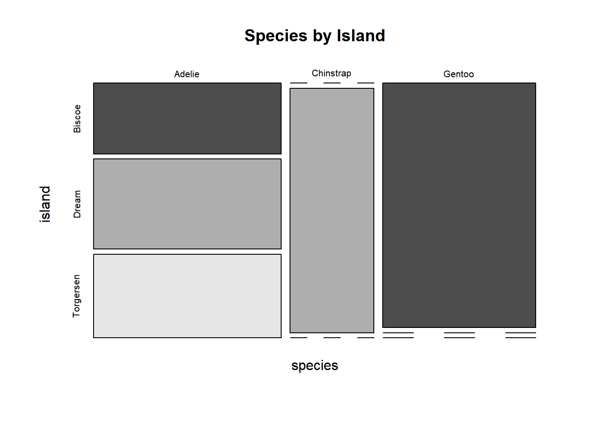
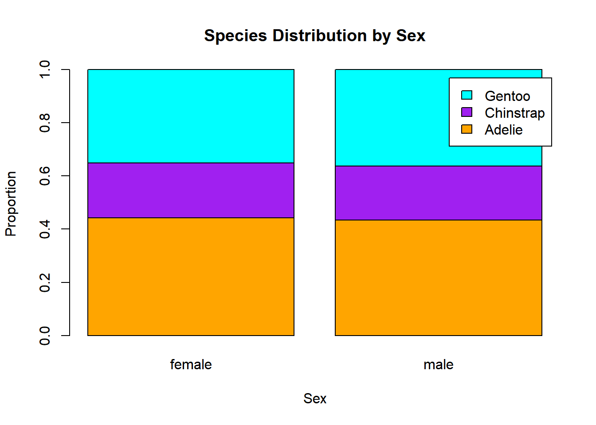

Code
library(dplyr)
library(stringr)
library(lubridate)
library(tidyr)
library(ggplot2)
library(tidymodels)
library(caret) #통계모델델
library(car)
library(DataExplorer)
library(skimr)
library(palmerpenguins)
library(emmeans)
library(janitor) # 변수명 정리library(dplyr)
library(stringr)
library(lubridate)
library(tidyr)
library(ggplot2)
library(tidymodels)
library(caret) #통계모델델
library(car)
library(DataExplorer)
library(skimr)
library(palmerpenguins)
library(emmeans)
library(janitor) # 변수명 정리## One-sample t-test 수행
#예: Sepal.Length의 평균이 5.8과 같은지 검정
t.test(iris$Sepal.Length, mu = 5.8)
One Sample t-test
data: iris$Sepal.Length
t = 0.64092, df = 149, p-value = 0.5226
alternative hypothesis: true mean is not equal to 5.8
95 percent confidence interval:
5.709732 5.976934
sample estimates:
mean of x
5.843333 #결과 p-value가 0.5226으로 0.05보다 크므로 평균은 5.8과 다르지 않다.
#5.8은 95% 신뢰구간 안에 있다.
## Shapiro-Wilk Test(t.test를 하려면 data가 정규성을 만족해야 한다.)
shapiro.test(iris$Sepal.Length)
Shapiro-Wilk normality test
data: iris$Sepal.Length
W = 0.97609, p-value = 0.01018qqnorm(iris$Sepal.Length)
qqline(iris$Sepal.Length, col = "red")
# 샤피로-윌크 검정에서 p-value가 0.05보다 작으므로 정규성을 따르지 않는다. 이때는 Wilcoxon signed-rank test를 진행한다.
# QQ-Plot은 시각화 하여 보여준다. 점들이 붉은색 직선 위에 잘 정렬되어 있다면 정규성을 만족하는 것으로 본다.
## Wilcoxon signed-rank test (정규성을 만족하지 않을 경우 비모수 검정 진행)
wilcox.test(iris$Sepal.Length, mu = 5.8)
Wilcoxon signed rank test with continuity correction
data: iris$Sepal.Length
V = 5358.5, p-value = 0.672
alternative hypothesis: true location is not equal to 5.8# p-value가 0.05보다 크므로 귀무가설(중위수(median)가 5.8이다)을 기각할 수 없습니다.
# t.test와 wilcox.test의 결과가 동일하다. 통계학에서 표본의 크기가 충분히 크면(보통 $n > 30$ 이상), 모집단의 분포가 정규분포가 아니더라도 표본 평균들의 분포는 정규분포에 가까워 진다. 샘플 개수가 많을때는 t.test는 정규성 가정이 조금 깨지더라도 상당히 강건(Robust)하게 작동한다.
# t.test: 데이터의 **'평균(Mean)'**을 직접 비교
# wilcox.test: 데이터의 **'순위(Rank)'**를 기반으로 중위수(Median)의 차이를 비교# 독립 표본 t-검정의 핵심 전제 조건
# 독립성: 두 그룹은 서로 영향을 주지 않아야 한다.
# 정규성: 각 그룹의 데이터가 정규분포를 따라야 한다.
# 등분산성: 두 그룹의 분산이 같아야 한다다. (var.test로 확인)
# 1. 데이터 필터링 (두 그룹만 추출)
filter_data <- iris %>% filter(Species %in% c("setosa", "versicolor"))
# 2. 정규성 검정 (각 그룹별로 수행)
shapiro.test(filter_data$Sepal.Length[filter_data$Species == "setosa"])
Shapiro-Wilk normality test
data: filter_data$Sepal.Length[filter_data$Species == "setosa"]
W = 0.9777, p-value = 0.4595shapiro.test(filter_data$Sepal.Length[filter_data$Species == "versicolor"])
Shapiro-Wilk normality test
data: filter_data$Sepal.Length[filter_data$Species == "versicolor"]
W = 0.97784, p-value = 0.4647# 정규성 검정 결과 setosa와 versicolor 모두 정규성을 만족한다.
# 3. 등분산성 검정
var.test(Sepal.Length ~ Species, data = filter_data)
F test to compare two variances
data: Sepal.Length by Species
F = 0.46634, num df = 49, denom df = 49, p-value = 0.008657
alternative hypothesis: true ratio of variances is not equal to 1
95 percent confidence interval:
0.2646385 0.8217841
sample estimates:
ratio of variances
0.4663429 # 등분산성 검정시 p-value가 0.05보다 작으므로 두 그룹은 분산이 서로 다르다.
# 4. 독립 표본 t-검정 수행
# 등분산성 검정 결과에 따라 var.equal 설정 (p > 0.05 이면 TRUE)
t.test(Sepal.Length ~ Species, data = filter_data, var.equal = FALSE)
Welch Two Sample t-test
data: Sepal.Length by Species
t = -10.521, df = 86.538, p-value < 2.2e-16
alternative hypothesis: true difference in means between group setosa and group versicolor is not equal to 0
95 percent confidence interval:
-1.1057074 -0.7542926
sample estimates:
mean in group setosa mean in group versicolor
5.006 5.936 # 두그룹의 분산이 다르므로로 t.test 진행시 var.equal = False를 지정하여 Welch's t-test 를 진행한다.
# Welch's t-test는 표준 t-test보다 더 보수적(안전한)이면서도 분산 불일치를 보정하여 왜곡 없는 결과를 제공한다.
# Welch's t-test 결과 두 그룹간 평균은 다르다.
boxplot(Sepal.Length ~ Species, data = filter_data,
main = "Sepal Length by Species",
col = c("lightblue", "lightgreen"))
#sleep 데이터는 10명의 환자에게 두 가지 약물(group 1, group 2)을 투여하고 수면 시간의 변화를 측정한 데이터
sleep_wide <- sleep %>% pivot_wider(names_from = group, values_from = extra)
# Paired t-test는 두 데이터 쌍 간의 차이(diff = X - Y)가 0인지 검정하는 것
# 가정: 차이값(Sepal.Length - Sepal.Width)이 정규분포를 따라야 한다.
# 1. 차이값 계산
diff_sleep <- sleep_wide$`1` - sleep_wide$`2`
# 2. 정규성 검정
shapiro.test(diff_sleep)
Shapiro-Wilk normality test
data: diff_sleep
W = 0.82987, p-value = 0.03334# p-value가 0.05보다 작으므로 정규성을 만족하지 않는다.
# 3. QQ-plot 확인
qqnorm(diff_sleep)
qqline(diff_sleep, col = "red")
t.test(sleep_wide$`1`, sleep_wide$`2`, paired = TRUE)
Paired t-test
data: sleep_wide$`1` and sleep_wide$`2`
t = -4.0621, df = 9, p-value = 0.002833
alternative hypothesis: true mean difference is not equal to 0
95 percent confidence interval:
-2.4598858 -0.7001142
sample estimates:
mean difference
-1.58 #p-value가 0.05보다 작으므로 "두 약물(또는 처치) 간에는 수면 시간에 통계적으로 유의미한 차이가 있다"고 해석된다. 하지만, 정규성을 만족하지 못했으므로, 비모수 검정인 Wilcoxon signed-rank test를 사용한다.
wilcox.test(sleep_wide$`1`, sleep_wide$`2`, paired = TRUE)
Wilcoxon signed rank test with continuity correction
data: sleep_wide$`1` and sleep_wide$`2`
V = 0, p-value = 0.009091
alternative hypothesis: true location shift is not equal to 0# wilcox.test에서도 p-value가 0.05보다 작아 약물 두 약물간에는 유의미한 차이가 있다.#palmerpenguins data를 사용하여 ANOVA 분석 진행
#palmerpenguins 데이터에서 펭귄의 종(species: Adelie, Chinstrap, Gentoo)에 따라 부리 길이(bill_length_mm)의 평균이 다른지 검정
#ANOVA도 선행검정 필요(정규성, 등분산성, 독립성)
#정규성: 각 종별 부리 길이가 정규분포를 따르는가?
#등분산성: 모든 종의 부리 길이 분산이 동일한가?
#독립성: 각 측정치는 독립적인가?
###일원분산분석 (One-way ANOVA)
# 1. 데이터 정제 (결측치 제거)
penguins_clean <- penguins %>%
filter(!is.na(bill_length_mm))
# 2. 선행 검정: 등분산성 확인 (Levene's Test)
car::leveneTest(bill_length_mm ~ species, data = penguins_clean)Levene's Test for Homogeneity of Variance (center = median)
Df F value Pr(>F)
group 2 2.2425 0.1078
339 # p-value가 0.05보다 크므로 종간 분산이 같다.
# 만일 p-value가 0.05보다 작아서 등분산성이 만족하지 않으면, oneway.test(..., var.equal = FALSE)를 사용해야 한다. oneway.test는 Welch’s ANOVA라고도 불리는 분석을 수행한다. 이전에 Two-sample t-test에서 등분산성이 아닐 때 Welch's t-test를 썼던 것과 동일한한 논리
# 4. One-way ANOVA 수행
anova_result <- aov(bill_length_mm ~ species, data = penguins_clean)
summary(anova_result) Df Sum Sq Mean Sq F value Pr(>F)
species 2 7194 3597 410.6 <2e-16 ***
Residuals 339 2970 9
---
Signif. codes: 0 '***' 0.001 '**' 0.01 '*' 0.05 '.' 0.1 ' ' 1# p-value가 0.05보다 작으므로 종간 부리길이 평균이 유의미한 차이가 있다.
# 5. 사후 검정 수행
TukeyHSD(anova_result) Tukey multiple comparisons of means
95% family-wise confidence level
Fit: aov(formula = bill_length_mm ~ species, data = penguins_clean)
$species
diff lwr upr p adj
Chinstrap-Adelie 10.042433 9.024859 11.0600064 0.0000000
Gentoo-Adelie 8.713487 7.867194 9.5597807 0.0000000
Gentoo-Chinstrap -1.328945 -2.381868 -0.2760231 0.0088993# ANOVA 결과에서 p-value가 0.05보다 작다면, "세 집단 중 적어도 어느 한 집단은 평균이 다르다"는 것을 의미한다. 하지만 정확히 어떤 종들끼리 차이가 나는지는 알려주지 않으므로 Tukey HSD 검정을 진행하여 종간 차이를 확인한다.
# 6. 시각화로 확인
plot(TukeyHSD(anova_result), las = 1)
boxplot(bill_length_mm ~ species, data = penguins_clean,
main = "Bill Length by Species",
xlab = "Species", ylab = "Bill Length (mm)",
col = c("orange", "purple", "cyan"))
## 등분산성을 만족하지 않을때는, oneway.test(var.equal = FALSE)를 진행한다.
# Welch's ANOVA 수행
welch_anova <- oneway.test(bill_length_mm ~ species,
data = penguins_clean,
var.equal = FALSE)
welch_anova
One-way analysis of means (not assuming equal variances)
data: bill_length_mm and species
F = 421.77, num df = 2.00, denom df = 166.47, p-value < 2.2e-16#등분산성이 깨진 상태에서의 사후 검정은 TukeyHSD가 아니라 Games-Howell 검정이라는 별도의 방법을 사용한다.
penguins_clean %>% rstatix::games_howell_test(bill_length_mm ~ species)# A tibble: 3 × 8
.y. group1 group2 estimate conf.low conf.high p.adj p.adj.signif
* <chr> <chr> <chr> <dbl> <dbl> <dbl> <dbl> <chr>
1 bill_length_mm Adelie Chins… 10.0 8.95 11.1 0 ****
2 bill_length_mm Adelie Gentoo 8.71 7.88 9.54 0 ****
3 bill_length_mm Chinstrap Gentoo -1.33 -2.49 -0.164 0.021 * ###이원분산분석 (Two-way ANOVA)
# Two-way ANOVA(이원 분산 분석)는 두 개의 독립 변수(범주형)가 하나의 종속 변수(연속형)에 미치는 영향을 동시에 분석하는 방법이다.
# Two-way ANOVA에서는 단순히 각 변수의 개별 영향(주효과)뿐만 아니라, 두 변수가 결합되어 나타나는 상호작용 효과(Interaction Effect)를 확인하는 것이 핵심이다.
# 주효과(Main Effect): 종에 따라 부리 길이가 다른가? 섬에 따라 부리 길이가 다른가?
# 상호작용 효과: 특정 섬에 사는 특정 종의 부리 길이만 유독 더 길거나 짧은가?
# Two-way ANOVA 모델 생성
# '*' 기호는 주효과와 상호작용 효과를 모두 포함하게 한다.
two_way_anova <- aov(bill_length_mm ~ species * island, data = penguins_clean)
summary(two_way_anova) Df Sum Sq Mean Sq F value Pr(>F)
species 2 7194 3597 409.208 <2e-16 ***
island 2 7 4 0.425 0.654
Residuals 337 2962 9
---
Signif. codes: 0 '***' 0.001 '**' 0.01 '*' 0.05 '.' 0.1 ' ' 1# 검정결과, species는 매우 유의미 하며, island는 유의미 하지 않는다. 하지만, 코드에서는 species * island로 입력하였으나 species:island(상호작용) 결과가 나오지 않았다.
# 이유는 아래와 같이 특정 섬에는 특정 종만 살고 있기 때문에 모든 종과 모든 섬의 조합을 계산할 수 없어서 R이 자동으로 상호작용 항을 제거하거나 계산하지 못하였다.
penguins_clean %>% count(island, species)# A tibble: 5 × 3
island species n
<fct> <fct> <int>
1 Biscoe Adelie 44
2 Biscoe Gentoo 123
3 Dream Adelie 56
4 Dream Chinstrap 68
5 Torgersen Adelie 51# 아래와 같은 경우는 상호작용(species:sex) 결과를 확인 할 수 있다.
penguins_sex_clean <- penguins_clean %>% filter(!is.na(sex))
two_way_sex <- aov(bill_length_mm ~ species * sex, data = penguins_sex_clean)
summary(two_way_sex) Df Sum Sq Mean Sq F value Pr(>F)
species 2 7015 3508 654.189 <2e-16 ***
sex 1 1136 1136 211.807 <2e-16 ***
species:sex 2 24 12 2.284 0.103
Residuals 327 1753 5
---
Signif. codes: 0 '***' 0.001 '**' 0.01 '*' 0.05 '.' 0.1 ' ' 1#사후 검정
TukeyHSD(two_way_sex) Tukey multiple comparisons of means
95% family-wise confidence level
Fit: aov(formula = bill_length_mm ~ species * sex, data = penguins_sex_clean)
$species
diff lwr upr p adj
Chinstrap-Adelie 10.009851 9.209424 10.8102782 0.0000000
Gentoo-Adelie 8.744095 8.070779 9.4174106 0.0000000
Gentoo-Chinstrap -1.265756 -2.094535 -0.4369773 0.0010847
$sex
diff lwr upr p adj
male-female 3.693368 3.194089 4.192646 0
$`species:sex`
diff lwr upr p adj
Chinstrap:female-Adelie:female 9.315995 7.937732 10.6942588 0.0000000
Gentoo:female-Adelie:female 8.306259 7.138639 9.4738788 0.0000000
Adelie:male-Adelie:female 3.132877 2.034137 4.2316165 0.0000000
Chinstrap:male-Adelie:female 13.836583 12.458320 15.2148470 0.0000000
Gentoo:male-Adelie:female 12.216236 11.064727 13.3677453 0.0000000
Gentoo:female-Chinstrap:female -1.009736 -2.443514 0.4240412 0.3338130
Adelie:male-Chinstrap:female -6.183118 -7.561382 -4.8048548 0.0000000
Chinstrap:male-Chinstrap:female 4.520588 2.910622 6.1305547 0.0000000
Gentoo:male-Chinstrap:female 2.900241 1.479553 4.3209291 0.0000002
Adelie:male-Gentoo:female -5.173382 -6.341002 -4.0057622 0.0000000
Chinstrap:male-Gentoo:female 5.530325 4.096547 6.9641020 0.0000000
Gentoo:male-Gentoo:female 3.909977 2.692570 5.1273846 0.0000000
Chinstrap:male-Adelie:male 10.703707 9.325443 12.0819703 0.0000000
Gentoo:male-Adelie:male 9.083360 7.931851 10.2348686 0.0000000
Gentoo:male-Chinstrap:male -1.620347 -3.041035 -0.1996591 0.0149963plot(TukeyHSD(two_way_sex), las = 1)


# 사후 검정시 emmeans 패키지를 사용하면 TukeyHSD보다 더 유연한 분석을 할 수 있다.
# emmeans(Estimated Marginal Means /추정된 한계 평균)의 약자로, 복잡한 통계 모델(ANOVA, 회귀분석 등)을 돌린 후 "그래서 각 그룹의 평균이 구체적으로 얼마고, 서로 어떻게 다른가?" 를 파헤치기 위해 사용하는 사후 분석 방법이다.
# palmerpenguins처럼 그룹별 샘플 수가 다를 때(Unbalanced data), 일반적인 평균값보다 더 정확한 수정된 평균(Estimated Marginal Means)을 사용한다.
# 회귀분석(Regression), 공분산 분석(ANCOVA), 혼합 효과 모델(Mixed Models) 등 다양한 모델에 적용가능하고, 조건 걸기가 자유로워 유연한 분석을 할 수 있다.
# 성별을 고정하고 종 간의 차이를 비교
em_species_by_sex <- emmeans(two_way_sex, ~ species | sex)
pairs(em_species_by_sex, adjust = "tukey")sex = female:
contrast estimate SE df t.ratio p.value
Adelie - Chinstrap -9.32 0.481 327 -19.377 <0.0001
Adelie - Gentoo -8.31 0.407 327 -20.393 <0.0001
Chinstrap - Gentoo 1.01 0.500 327 2.019 0.1093
sex = male:
contrast estimate SE df t.ratio p.value
Adelie - Chinstrap -10.70 0.481 327 -22.263 <0.0001
Adelie - Gentoo -9.08 0.402 327 -22.613 <0.0001
Chinstrap - Gentoo 1.62 0.496 327 3.270 0.0034
P value adjustment: tukey method for comparing a family of 3 estimates # 모든 조합 간의 비교
em_all <- emmeans(two_way_sex, pairwise ~ species * sex)
em_all$contrasts # 상세 비교 결과만 출력 contrast estimate SE df t.ratio p.value
Adelie female - Chinstrap female -9.32 0.481 327 -19.377 <0.0001
Adelie female - Gentoo female -8.31 0.407 327 -20.393 <0.0001
Adelie female - Adelie male -3.13 0.383 327 -8.174 <0.0001
Adelie female - Chinstrap male -13.84 0.481 327 -28.779 <0.0001
Adelie female - Gentoo male -12.22 0.402 327 -30.413 <0.0001
Chinstrap female - Gentoo female 1.01 0.500 327 2.019 0.3338
Chinstrap female - Adelie male 6.18 0.481 327 12.860 <0.0001
Chinstrap female - Chinstrap male -4.52 0.562 327 -8.049 <0.0001
Chinstrap female - Gentoo male -2.90 0.496 327 -5.852 <0.0001
Gentoo female - Adelie male 5.17 0.407 327 12.702 <0.0001
Gentoo female - Chinstrap male -5.53 0.500 327 -11.057 <0.0001
Gentoo female - Gentoo male -3.91 0.425 327 -9.207 <0.0001
Adelie male - Chinstrap male -10.70 0.481 327 -22.263 <0.0001
Adelie male - Gentoo male -9.08 0.402 327 -22.613 <0.0001
Chinstrap male - Gentoo male 1.62 0.496 327 3.270 0.0150
P value adjustment: tukey method for comparing a family of 6 estimates # 상호작용 및 평균 지점 시각화
emmip(two_way_sex, sex ~ species, CIs = T) #CIs는 신뢰구간(Confidence Interval)
# 범주형 변수의 빈도표 만들기(table or xtabs)
table(penguins$species, penguins$island)
Biscoe Dream Torgersen
Adelie 44 56 52
Chinstrap 0 68 0
Gentoo 124 0 0many_var <- table(penguins$species, penguins$island, penguins$sex)
xtabs(~species + island, data = penguins) island
species Biscoe Dream Torgersen
Adelie 44 56 52
Chinstrap 0 68 0
Gentoo 124 0 0many_var <- xtabs(~species + island + sex, data = penguins) #xtabs를 사용하면 fomula 형식으로 더 깔끔하게 코드를 만들 수 있다.
ftable(many_var) #Flatten 형태로 평면으로 출력하기 sex female male
species island
Adelie Biscoe 22 22
Dream 27 28
Torgersen 24 23
Chinstrap Biscoe 0 0
Dream 34 34
Torgersen 0 0
Gentoo Biscoe 58 61
Dream 0 0
Torgersen 0 0### 적합도 검정
#관측된 비율이 예상한 이론적 비율과 일치하는지 확인
# 1. 실제 관측 빈도
obs_counts <- table(penguins$species)
# 2. 예상 비율 설정 (예: 세 종의 비율이 동일하다면 1/3씩)
expected_probs <- c(1/3, 1/3, 1/3)
# 3. 적합도 검정 수행
chisq.test(obs_counts, p = expected_probs)
Chi-squared test for given probabilities
data: obs_counts
X-squared = 31.907, df = 2, p-value = 1.179e-07# p-value가 0.05보다 작으므로 예상 빈도와 다르다고 판단한다.
### 독립성 검정
table_data <- xtabs(~species + island, data = penguins)
chisq.test(table_data)
Pearson's Chi-squared test
data: table_data
X-squared = 299.55, df = 4, p-value < 2.2e-16# 검정결과 p-value가 0.05보다 작으므로 species와 island는 서로 독립적이지 않다.
chisq.test(penguins$species, penguins$island) #table 형태로 작성하지 않아도 동작하긴함.
Pearson's Chi-squared test
data: penguins$species and penguins$island
X-squared = 299.55, df = 4, p-value < 2.2e-16#시각화
mosaicplot(table_data, main = "Species by Island", color = T)
### 동질성 검정(독립성검정과 코드 동일하다. 데이터를 수집하는 관점(설계)에서 차이)
# 1. xtabs를 사용하여 성별에 따른 종의 분포를 표로 만들기기
homo_tab <- xtabs(~ sex + species, data = na.omit(penguins))
# 2. 카이제곱 동질성 검정 수행
# 가설: "수컷 집단의 종 비율과 암컷 집단의 종 비율은 동일하다."
chisq.test(homo_tab)
Pearson's Chi-squared test
data: homo_tab
X-squared = 0.048607, df = 2, p-value = 0.976# p-value가 0.05보다 크므로 수컷/암컷 집단의 종 비율은 동일하다.
# 비율로 변환하여 시각화
prop_tab <- prop.table(homo_tab, margin = 1) # 행(sex) 기준으로 비율 계산
barplot(t(prop_tab),
col = c("orange", "purple", "cyan"),
legend = colnames(homo_tab),
main = "Species Distribution by Sex",
xlab = "Sex", ylab = "Proportion")
penguins_clean <- na.omit(penguins)
# 1. 상관계수 계산 (Pearson)
cor_val <- cor(penguins_clean$bill_length_mm, penguins_clean$body_mass_g)
cor_val <- cor(penguins_clean %>% select(where(is.numeric)))
# 2. 유의성 검정 (p-value 확인)
cor.test(penguins_clean$bill_length_mm, penguins_clean$body_mass_g)
Pearson's product-moment correlation
data: penguins_clean$bill_length_mm and penguins_clean$body_mass_g
t = 13.276, df = 331, p-value < 2.2e-16
alternative hypothesis: true correlation is not equal to 0
95 percent confidence interval:
0.5145745 0.6554058
sample estimates:
cor
0.5894511 mt_data <- as.matrix(penguins_clean[, c("bill_length_mm", "bill_depth_mm", "flipper_length_mm", "body_mass_g")]) #cor.test는 두개변수간의 상관계수 p-value만 확인 가능
# Hmisc, psych 패키지에서 여러변수 한 번에 계산
res <- Hmisc::rcorr(penguins_clean %>% select(where(is.numeric)) %>% as.matrix())
# 결과 확인
res$r # 상관계수 행렬 bill_length_mm bill_depth_mm flipper_length_mm body_mass_g
bill_length_mm 1.0000000 -0.2286256 0.6530956 0.58945111
bill_depth_mm -0.2286256 1.0000000 -0.5777917 -0.47201566
flipper_length_mm 0.6530956 -0.5777917 1.0000000 0.87297890
body_mass_g 0.5894511 -0.4720157 0.8729789 1.00000000
year 0.0326569 -0.0481816 0.1510679 0.02186213
year
bill_length_mm 0.03265690
bill_depth_mm -0.04818160
flipper_length_mm 0.15106792
body_mass_g 0.02186213
year 1.00000000res$P # p-value 행렬 bill_length_mm bill_depth_mm flipper_length_mm body_mass_g
bill_length_mm NA 0.0000252829 0.000000000 0.0000000
bill_depth_mm 0.0000252829 NA 0.000000000 0.0000000
flipper_length_mm 0.0000000000 0.0000000000 NA 0.0000000
body_mass_g 0.0000000000 0.0000000000 0.000000000 NA
year 0.5526124311 0.3807937906 0.005740721 0.6910033
year
bill_length_mm 0.552612431
bill_depth_mm 0.380793791
flipper_length_mm 0.005740721
body_mass_g 0.691003342
year NAlibrary(psych)
res_psych <- corr.test(penguins_clean %>% select(where(is.numeric)) %>% as.matrix(),
method = "pearson")
# p-value 행렬 출력
print(res_psych$p, digits = 3) bill_length_mm bill_depth_mm flipper_length_mm body_mass_g
bill_length_mm 0.00e+00 1.26e-04 6.49e-41 1.23e-31
bill_depth_mm 2.53e-05 0.00e+00 3.34e-30 4.21e-19
flipper_length_mm 7.21e-42 4.78e-31 0.00e+00 3.13e-104
body_mass_g 1.54e-32 7.02e-20 3.13e-105 0.00e+00
year 5.53e-01 3.81e-01 5.74e-03 6.91e-01
year
bill_length_mm 1.000
bill_depth_mm 1.000
flipper_length_mm 0.023
body_mass_g 1.000
year 0.000# inspect_df 패키지를 활용한 방법(corr, p_value, 신뢰구간 표시로 보기 편함. 시각화 쉬움움)
res <- inspectdf::inspect_cor(penguins_clean %>% select(where(is.numeric))) %>% arrange(p_value)
inspectdf::show_plot(res)
## 회귀 모델 ##
penguins_clean <- na.omit(palmerpenguins::penguins)
model <- lm(body_mass_g ~ bill_length_mm + flipper_length_mm, data = penguins_clean)
# 전체 결과 요약
summary(model)
Call:
lm(formula = body_mass_g ~ bill_length_mm + flipper_length_mm,
data = penguins_clean)
Residuals:
Min 1Q Median 3Q Max
-1083.08 -282.65 -17.18 242.95 1293.24
Coefficients:
Estimate Std. Error t value Pr(>|t|)
(Intercept) -5836.299 312.604 -18.670 <2e-16 ***
bill_length_mm 4.959 5.214 0.951 0.342
flipper_length_mm 48.890 2.034 24.034 <2e-16 ***
---
Signif. codes: 0 '***' 0.001 '**' 0.01 '*' 0.05 '.' 0.1 ' ' 1
Residual standard error: 393.4 on 330 degrees of freedom
Multiple R-squared: 0.7627, Adjusted R-squared: 0.7613
F-statistic: 530.4 on 2 and 330 DF, p-value: < 2.2e-16# t-검정 (개별 계수 중 어떤게 유의미 한지)은 결과표의 p-value를 확인한다
# F-검정 (만들어진 모델이 쓸만한지)은 결과표 하단의 F-statistic과 p-value를 확인한다.
# 잔차 분석
par(mfrow = c(2, 2)) # 4개 그래프를 한 화면에 출력
plot(model)
# 결과 그림 설명
# Residuals vs Fitted(선형성) : 점들이 0을 중심으로 위아래로 무작위하게 흩어져 있어야 함.
# Normal Q-Q(정규성) : 점들이 대각선 점선 위에 일렬로 놓여 있어야 함.
#(Normal Q-Q 선에서 점들이 많이 벗어나 났다면 데이터의 변환(Log 등)이나 이상치 제거가 필요할 수 있음)
# Scale-Location(등분산성) : 빨간 실선이 수평을 유지하고 점들의 퍼짐 정도가 일정해야 함.
# Residuals vs Leverage(영향력 점(Outliers)) : Cook's distance 선 밖에 있는 유난히 튀는 데이터가 없어야 함.그래프에서 우측 상단이나 하단의 점선(Cook's Distance) 근처에 있거나, 유난히 가로(Leverage)로 멀리 떨어져 있는 데이터들은 모델 전체를 흔들 수 있는 영향력 있는 관측치임.
#추가 분석
# 1. 다중공선성 확인 (VIF) - 10 이상이면 위험
car::vif(model) bill_length_mm flipper_length_mm
1.743782 1.743782 # 2. 잔차의 독립성 (Durbin-Watson 검정) - 2에 가까워야 함
car::durbinWatsonTest(model) lag Autocorrelation D-W Statistic p-value
1 -0.03126089 2.054763 0.678
Alternative hypothesis: rho != 0# 3. 잔차의 정규성 (Shapiro-Wilk 검정) - p > 0.05면 정규성 만족
shapiro.test(residuals(model))
Shapiro-Wilk normality test
data: residuals(model)
W = 0.99301, p-value = 0.1233# 원 data와 lm model로 구한 data 비교하기기
fitted_values <- predict(model)
res_data <- data.frame(orgin_data = penguins_clean$body_mass_g,
pred_data = fitted_values)
plot(res_data$orgin_data, res_data$pred_data)
## new data에 대한 예측값 구하기 ##
# 1. 새로운 데이터 생성 (부리 길이가 40, 50, 60인 경우)
new_penguins <- data.frame(bill_length_mm = c(40, 50, 60),
flipper_length_mm = c(200, 220, 230))
# 2. 예측 수행
new_pred <- predict(model, newdata = new_penguins)
# 3. 결과 확인
new_penguins$pred_weight <- new_pred
new_penguins bill_length_mm flipper_length_mm pred_weight
1 40 200 4139.984
2 50 220 5167.364
3 60 230 5705.846
정답(Label)이 있는 데이터를 학습하여 예측하는 방법입니다.
의사결정나무 (Decision Tree): 해석력이 좋아 시각화 문제로 자주 출제됩니다. (과적합 방지를 위한 가지치기 필수)
랜덤 포레스트 (Random Forest): 앙상블의 기본. 배깅(Bagging) 기법을 이해해야 합니다.
XGBoost / LightGBM: 실무 및 시험에서 가장 성능이 좋은 부스팅(Boosting) 모델입니다. (Hyperparameter 튜닝 포함)
로지스틱 회귀 (Logistic Regression): 분류 문제의 베이스라인 모델로, 오즈비(Odds Ratio) 해석이 중요합니다.
나이브 베이즈 (Naive Bayes): 텍스트 분류나 베이즈 정리를 이용한 확률적 분류.
# 의사결정나무는 나무1그루가 의사결정, 랜덤 포레스트는 나무들의 병렬 합산 (Bagging), XGBoost 나무들의 직렬 보완 (Boosting) 방식이다. 일반적으로 성능은 의사결정나무 < 랜덤포레스트 < XGBoost이다.
## 의사결정나무
# 1. 필수 패키지 로드
library(AmesHousing) # 데이터셋
library(janitor) # 변수명 정제
library(caret) # 머신러닝 워크플로우 통합
library(rpart.plot) # 의사결정나무 시각화
# 2. 데이터 불러오기 및 초기 정제
raw_ames <- ames_raw
ames_processed <- raw_ames %>%
janitor::clean_names() %>% #변수명 깨끗이이
mutate(across(where(is.character), as.factor)) %>% # 범주형(Factor)으로 변환 (분류 모델의 필수 조건)
mutate(price_grade = ifelse(sale_price > median(sale_price), "High", "Low")) %>% # 분류를 위해 종속변수 생성
mutate(price_grade = as.factor(price_grade)) %>%
select(-sale_price) %>% #원래 숫자형 가격 변수는 제거 (학습 방해 방지)
select(price_grade, gr_liv_area, overall_qual, neighborhood, year_built, total_bsmt_sf) %>%
na.omit() #원하는 변수만 선택하고 NA 제거
# origin data 상에서 NA를 제거 하지 않고, 아래 train 함수 안에서 아래처럼 결측치를 채워줘도 된다.
# 3. 데이터 분할
set.seed(123) # 결과 재현성 확보
train_idx <- createDataPartition(ames_processed$price_grade, p = 0.8, list = FALSE) #(Train 80% / Test 20%)
train_data <- ames_processed[train_idx, ]
test_data <- ames_processed[-train_idx, ]
# 4. 모델 학습 설정 (교차 검증)
# 과적합을 방지하고 최적의 CP값을 찾음
train_control <- trainControl(
method = "cv",
number = 5, #5-Fold 교차 검증
classProbs = TRUE, # 클래스별 확률 계산
summaryFunction = defaultSummary # 정확도(Accuracy) 기준 평가
)
# 5. 의사결정나무 모델 학습 및 자동 가지치기
# tuneLength = 10: 10개의 CP 후보군을 테스트하여 가장 성적이 좋은 모델을 자동 선택합니다.
dt_model <- train(
price_grade ~ gr_liv_area + overall_qual + neighborhood + year_built + total_bsmt_sf,
data = train_data,
method = "rpart",
trControl = train_control,
tuneLength = 10,
metric = "Accuracy"
# na.action을 pass로 설정하고 preProcess에서 imputation(대체) 수행
#na.action = na.pass,
#preProcess = c("medianImpute", "center", "scale") # 중앙값으로 결측치 채움
)
# 6. 학습 결과 확인
print(dt_model)CART
2344 samples
5 predictor
2 classes: 'High', 'Low'
No pre-processing
Resampling: Cross-Validated (5 fold)
Summary of sample sizes: 1875, 1875, 1876, 1874, 1876
Resampling results across tuning parameters:
cp Accuracy Kappa
0.000853971 0.8912213 0.7824383
0.001423285 0.8890855 0.7781667
0.001707942 0.8869551 0.7739057
0.002134927 0.8878098 0.7756152
0.002561913 0.8878098 0.7756167
0.003415884 0.8878089 0.7756122
0.011955594 0.8715960 0.7431899
0.038428693 0.8596565 0.7192966
0.050384287 0.8289710 0.6578745
0.639624253 0.6185606 0.2362684
Accuracy was used to select the optimal model using the largest value.
The final value used for the model was cp = 0.000853971.# 7. 최종 모델 시각화 (가지치기가 완료된 상태)
rpart.plot(dt_model$finalModel,
type = 4,
extra = 104,
under = TRUE,
box.palette = "RdBu",
main = "Ames Housing Price Classification Tree")
# 8. 테스트 데이터를 통한 최종 성능 검증
predictions <- predict(dt_model, newdata = test_data)
# 혼동 행렬(Confusion Matrix) 출력
conf_matrix <- confusionMatrix(predictions, test_data$price_grade)
print(conf_matrix)Confusion Matrix and Statistics
Reference
Prediction High Low
High 253 17
Low 39 276
Accuracy : 0.9043
95% CI : (0.8775, 0.9269)
No Information Rate : 0.5009
P-Value [Acc > NIR] : < 2.2e-16
Kappa : 0.8085
Mcnemar's Test P-Value : 0.005012
Sensitivity : 0.8664
Specificity : 0.9420
Pos Pred Value : 0.9370
Neg Pred Value : 0.8762
Prevalence : 0.4991
Detection Rate : 0.4325
Detection Prevalence : 0.4615
Balanced Accuracy : 0.9042
'Positive' Class : High
# 9. 변수 중요도 확인 (어떤 요인이 집값을 결정짓는가?)
var_imp <- varImp(dt_model)
plot(var_imp, main = "Variable Importance")
## 랜덤포레스트
library(randomForest) # 랜덤 포레스트 엔진
# 2. 모델 학습 설정 (5-Fold 교차 검증)
# 랜덤 포레스트는 계산량이 많으므로 CV 횟수를 적절히 조절한다.
train_control <- trainControl(
method = "cv",
number = 5,
allowParallel = TRUE # 컴퓨터 자원을 병렬로 사용하여 속도 향상
)
# 3. 랜덤 포레스트 모델 학습
# method = "rf" 가 랜덤 포레스트를 의미합니다.
# tuneLength = 3: mtry(각 분할에서 무작위로 선택할 변수 개수) 후보군을 테스트합니다.
rf_model <- train(
price_grade ~ gr_liv_area + overall_qual + neighborhood + year_built + total_bsmt_sf,
data = train_data,
method = "rf",
trControl = train_control,
tuneLength = 3,
ntree = 500, # 나무의 개수 (기본 500개)
importance = TRUE # 변수 중요도 계산 활성화
)
# 랜덤 포레스트는 나무를 500그루씩 만들기 때문에 rpart보다 훨씬 오래 걸린다. 데이터가 크다면 tuneLength를 작게 잡는게 좋다.
# 4. 학습 결과 및 최적의 파라미터(mtry) 확인
print(rf_model)Random Forest
2344 samples
5 predictor
2 classes: 'High', 'Low'
No pre-processing
Resampling: Cross-Validated (5 fold)
Summary of sample sizes: 1875, 1875, 1876, 1875, 1875
Resampling results across tuning parameters:
mtry Accuracy Kappa
2 0.8993193 0.7986190
16 0.9082718 0.8165398
31 0.9052849 0.8105674
Accuracy was used to select the optimal model using the largest value.
The final value used for the model was mtry = 16.# 테스트 데이터 예측
rf_predictions <- predict(rf_model, newdata = test_data)
# 혼동 행렬(Confusion Matrix)
rf_conf <- confusionMatrix(rf_predictions, test_data$price_grade)
print(rf_conf)Confusion Matrix and Statistics
Reference
Prediction High Low
High 260 26
Low 32 267
Accuracy : 0.9009
95% CI : (0.8737, 0.9239)
No Information Rate : 0.5009
P-Value [Acc > NIR] : <2e-16
Kappa : 0.8017
Mcnemar's Test P-Value : 0.5115
Sensitivity : 0.8904
Specificity : 0.9113
Pos Pred Value : 0.9091
Neg Pred Value : 0.8930
Prevalence : 0.4991
Detection Rate : 0.4444
Detection Prevalence : 0.4889
Balanced Accuracy : 0.9008
'Positive' Class : High
# 변수 중요도 시각화
plot(varImp(rf_model), main = "Random Forest Variable Importance")
## XGBoost
library(xgboost)
# 2. 학습 설정 (5-Fold 교차 검증)
train_control <- trainControl(
method = "cv",
number = 5,
allowParallel = TRUE,
verboseIter = FALSE # 학습 과정 로그 출력 여부
)
# 3. XGBoost 모델 학습
# method = "xgbTree" 사용
# XGBoost는 결측치를 자체적으로 처리할 수 있어 na.action = na.pass 설정이 가능합니다.
xgb_model <- train(
price_grade ~ gr_liv_area + overall_qual + neighborhood + year_built + total_bsmt_sf,
data = train_data,
method = "xgbTree",
trControl = train_control,
tuneLength = 3, # caret이 nrounds, max_depth 등을 조합하여 3가지 세트를 테스트
na.action = na.pass # 결측치를 통과시키면 xgboost 내부에서 최적의 방향으로 분류함
)[07:35:32] WARNING: src/c_api/c_api.cc:935: `ntree_limit` is deprecated, use `iteration_range` instead.
[07:35:32] WARNING: src/c_api/c_api.cc:935: `ntree_limit` is deprecated, use `iteration_range` instead.
[07:35:33] WARNING: src/c_api/c_api.cc:935: `ntree_limit` is deprecated, use `iteration_range` instead.
[07:35:33] WARNING: src/c_api/c_api.cc:935: `ntree_limit` is deprecated, use `iteration_range` instead.
[07:35:33] WARNING: src/c_api/c_api.cc:935: `ntree_limit` is deprecated, use `iteration_range` instead.
[07:35:33] WARNING: src/c_api/c_api.cc:935: `ntree_limit` is deprecated, use `iteration_range` instead.
[07:35:33] WARNING: src/c_api/c_api.cc:935: `ntree_limit` is deprecated, use `iteration_range` instead.
[07:35:33] WARNING: src/c_api/c_api.cc:935: `ntree_limit` is deprecated, use `iteration_range` instead.
[07:35:33] WARNING: src/c_api/c_api.cc:935: `ntree_limit` is deprecated, use `iteration_range` instead.
[07:35:33] WARNING: src/c_api/c_api.cc:935: `ntree_limit` is deprecated, use `iteration_range` instead.
[07:35:34] WARNING: src/c_api/c_api.cc:935: `ntree_limit` is deprecated, use `iteration_range` instead.
[07:35:34] WARNING: src/c_api/c_api.cc:935: `ntree_limit` is deprecated, use `iteration_range` instead.
[07:35:34] WARNING: src/c_api/c_api.cc:935: `ntree_limit` is deprecated, use `iteration_range` instead.
[07:35:34] WARNING: src/c_api/c_api.cc:935: `ntree_limit` is deprecated, use `iteration_range` instead.
[07:35:34] WARNING: src/c_api/c_api.cc:935: `ntree_limit` is deprecated, use `iteration_range` instead.
[07:35:34] WARNING: src/c_api/c_api.cc:935: `ntree_limit` is deprecated, use `iteration_range` instead.
[07:35:34] WARNING: src/c_api/c_api.cc:935: `ntree_limit` is deprecated, use `iteration_range` instead.
[07:35:34] WARNING: src/c_api/c_api.cc:935: `ntree_limit` is deprecated, use `iteration_range` instead.
[07:35:35] WARNING: src/c_api/c_api.cc:935: `ntree_limit` is deprecated, use `iteration_range` instead.
[07:35:35] WARNING: src/c_api/c_api.cc:935: `ntree_limit` is deprecated, use `iteration_range` instead.
[07:35:35] WARNING: src/c_api/c_api.cc:935: `ntree_limit` is deprecated, use `iteration_range` instead.
[07:35:35] WARNING: src/c_api/c_api.cc:935: `ntree_limit` is deprecated, use `iteration_range` instead.
[07:35:35] WARNING: src/c_api/c_api.cc:935: `ntree_limit` is deprecated, use `iteration_range` instead.
[07:35:35] WARNING: src/c_api/c_api.cc:935: `ntree_limit` is deprecated, use `iteration_range` instead.
[07:35:36] WARNING: src/c_api/c_api.cc:935: `ntree_limit` is deprecated, use `iteration_range` instead.
[07:35:36] WARNING: src/c_api/c_api.cc:935: `ntree_limit` is deprecated, use `iteration_range` instead.
[07:35:36] WARNING: src/c_api/c_api.cc:935: `ntree_limit` is deprecated, use `iteration_range` instead.
[07:35:36] WARNING: src/c_api/c_api.cc:935: `ntree_limit` is deprecated, use `iteration_range` instead.
[07:35:36] WARNING: src/c_api/c_api.cc:935: `ntree_limit` is deprecated, use `iteration_range` instead.
[07:35:36] WARNING: src/c_api/c_api.cc:935: `ntree_limit` is deprecated, use `iteration_range` instead.
[07:35:37] WARNING: src/c_api/c_api.cc:935: `ntree_limit` is deprecated, use `iteration_range` instead.
[07:35:37] WARNING: src/c_api/c_api.cc:935: `ntree_limit` is deprecated, use `iteration_range` instead.
[07:35:37] WARNING: src/c_api/c_api.cc:935: `ntree_limit` is deprecated, use `iteration_range` instead.
[07:35:37] WARNING: src/c_api/c_api.cc:935: `ntree_limit` is deprecated, use `iteration_range` instead.
[07:35:38] WARNING: src/c_api/c_api.cc:935: `ntree_limit` is deprecated, use `iteration_range` instead.
[07:35:38] WARNING: src/c_api/c_api.cc:935: `ntree_limit` is deprecated, use `iteration_range` instead.
[07:35:38] WARNING: src/c_api/c_api.cc:935: `ntree_limit` is deprecated, use `iteration_range` instead.
[07:35:38] WARNING: src/c_api/c_api.cc:935: `ntree_limit` is deprecated, use `iteration_range` instead.
[07:35:38] WARNING: src/c_api/c_api.cc:935: `ntree_limit` is deprecated, use `iteration_range` instead.
[07:35:38] WARNING: src/c_api/c_api.cc:935: `ntree_limit` is deprecated, use `iteration_range` instead.
[07:35:38] WARNING: src/c_api/c_api.cc:935: `ntree_limit` is deprecated, use `iteration_range` instead.
[07:35:38] WARNING: src/c_api/c_api.cc:935: `ntree_limit` is deprecated, use `iteration_range` instead.
[07:35:39] WARNING: src/c_api/c_api.cc:935: `ntree_limit` is deprecated, use `iteration_range` instead.
[07:35:39] WARNING: src/c_api/c_api.cc:935: `ntree_limit` is deprecated, use `iteration_range` instead.
[07:35:39] WARNING: src/c_api/c_api.cc:935: `ntree_limit` is deprecated, use `iteration_range` instead.
[07:35:39] WARNING: src/c_api/c_api.cc:935: `ntree_limit` is deprecated, use `iteration_range` instead.
[07:35:39] WARNING: src/c_api/c_api.cc:935: `ntree_limit` is deprecated, use `iteration_range` instead.
[07:35:39] WARNING: src/c_api/c_api.cc:935: `ntree_limit` is deprecated, use `iteration_range` instead.
[07:35:39] WARNING: src/c_api/c_api.cc:935: `ntree_limit` is deprecated, use `iteration_range` instead.
[07:35:39] WARNING: src/c_api/c_api.cc:935: `ntree_limit` is deprecated, use `iteration_range` instead.
[07:35:40] WARNING: src/c_api/c_api.cc:935: `ntree_limit` is deprecated, use `iteration_range` instead.
[07:35:40] WARNING: src/c_api/c_api.cc:935: `ntree_limit` is deprecated, use `iteration_range` instead.
[07:35:40] WARNING: src/c_api/c_api.cc:935: `ntree_limit` is deprecated, use `iteration_range` instead.
[07:35:40] WARNING: src/c_api/c_api.cc:935: `ntree_limit` is deprecated, use `iteration_range` instead.
[07:35:40] WARNING: src/c_api/c_api.cc:935: `ntree_limit` is deprecated, use `iteration_range` instead.
[07:35:40] WARNING: src/c_api/c_api.cc:935: `ntree_limit` is deprecated, use `iteration_range` instead.
[07:35:41] WARNING: src/c_api/c_api.cc:935: `ntree_limit` is deprecated, use `iteration_range` instead.
[07:35:41] WARNING: src/c_api/c_api.cc:935: `ntree_limit` is deprecated, use `iteration_range` instead.
[07:35:41] WARNING: src/c_api/c_api.cc:935: `ntree_limit` is deprecated, use `iteration_range` instead.
[07:35:41] WARNING: src/c_api/c_api.cc:935: `ntree_limit` is deprecated, use `iteration_range` instead.
[07:35:41] WARNING: src/c_api/c_api.cc:935: `ntree_limit` is deprecated, use `iteration_range` instead.
[07:35:41] WARNING: src/c_api/c_api.cc:935: `ntree_limit` is deprecated, use `iteration_range` instead.
[07:35:42] WARNING: src/c_api/c_api.cc:935: `ntree_limit` is deprecated, use `iteration_range` instead.
[07:35:42] WARNING: src/c_api/c_api.cc:935: `ntree_limit` is deprecated, use `iteration_range` instead.
[07:35:42] WARNING: src/c_api/c_api.cc:935: `ntree_limit` is deprecated, use `iteration_range` instead.
[07:35:42] WARNING: src/c_api/c_api.cc:935: `ntree_limit` is deprecated, use `iteration_range` instead.
[07:35:42] WARNING: src/c_api/c_api.cc:935: `ntree_limit` is deprecated, use `iteration_range` instead.
[07:35:42] WARNING: src/c_api/c_api.cc:935: `ntree_limit` is deprecated, use `iteration_range` instead.
[07:35:43] WARNING: src/c_api/c_api.cc:935: `ntree_limit` is deprecated, use `iteration_range` instead.
[07:35:43] WARNING: src/c_api/c_api.cc:935: `ntree_limit` is deprecated, use `iteration_range` instead.
[07:35:43] WARNING: src/c_api/c_api.cc:935: `ntree_limit` is deprecated, use `iteration_range` instead.
[07:35:43] WARNING: src/c_api/c_api.cc:935: `ntree_limit` is deprecated, use `iteration_range` instead.
[07:35:44] WARNING: src/c_api/c_api.cc:935: `ntree_limit` is deprecated, use `iteration_range` instead.
[07:35:44] WARNING: src/c_api/c_api.cc:935: `ntree_limit` is deprecated, use `iteration_range` instead.
[07:35:44] WARNING: src/c_api/c_api.cc:935: `ntree_limit` is deprecated, use `iteration_range` instead.
[07:35:44] WARNING: src/c_api/c_api.cc:935: `ntree_limit` is deprecated, use `iteration_range` instead.
[07:35:44] WARNING: src/c_api/c_api.cc:935: `ntree_limit` is deprecated, use `iteration_range` instead.
[07:35:44] WARNING: src/c_api/c_api.cc:935: `ntree_limit` is deprecated, use `iteration_range` instead.
[07:35:44] WARNING: src/c_api/c_api.cc:935: `ntree_limit` is deprecated, use `iteration_range` instead.
[07:35:44] WARNING: src/c_api/c_api.cc:935: `ntree_limit` is deprecated, use `iteration_range` instead.
[07:35:44] WARNING: src/c_api/c_api.cc:935: `ntree_limit` is deprecated, use `iteration_range` instead.
[07:35:44] WARNING: src/c_api/c_api.cc:935: `ntree_limit` is deprecated, use `iteration_range` instead.
[07:35:45] WARNING: src/c_api/c_api.cc:935: `ntree_limit` is deprecated, use `iteration_range` instead.
[07:35:45] WARNING: src/c_api/c_api.cc:935: `ntree_limit` is deprecated, use `iteration_range` instead.
[07:35:45] WARNING: src/c_api/c_api.cc:935: `ntree_limit` is deprecated, use `iteration_range` instead.
[07:35:45] WARNING: src/c_api/c_api.cc:935: `ntree_limit` is deprecated, use `iteration_range` instead.
[07:35:45] WARNING: src/c_api/c_api.cc:935: `ntree_limit` is deprecated, use `iteration_range` instead.
[07:35:45] WARNING: src/c_api/c_api.cc:935: `ntree_limit` is deprecated, use `iteration_range` instead.
[07:35:45] WARNING: src/c_api/c_api.cc:935: `ntree_limit` is deprecated, use `iteration_range` instead.
[07:35:45] WARNING: src/c_api/c_api.cc:935: `ntree_limit` is deprecated, use `iteration_range` instead.
[07:35:46] WARNING: src/c_api/c_api.cc:935: `ntree_limit` is deprecated, use `iteration_range` instead.
[07:35:46] WARNING: src/c_api/c_api.cc:935: `ntree_limit` is deprecated, use `iteration_range` instead.
[07:35:46] WARNING: src/c_api/c_api.cc:935: `ntree_limit` is deprecated, use `iteration_range` instead.
[07:35:46] WARNING: src/c_api/c_api.cc:935: `ntree_limit` is deprecated, use `iteration_range` instead.
[07:35:46] WARNING: src/c_api/c_api.cc:935: `ntree_limit` is deprecated, use `iteration_range` instead.
[07:35:46] WARNING: src/c_api/c_api.cc:935: `ntree_limit` is deprecated, use `iteration_range` instead.
[07:35:47] WARNING: src/c_api/c_api.cc:935: `ntree_limit` is deprecated, use `iteration_range` instead.
[07:35:47] WARNING: src/c_api/c_api.cc:935: `ntree_limit` is deprecated, use `iteration_range` instead.
[07:35:47] WARNING: src/c_api/c_api.cc:935: `ntree_limit` is deprecated, use `iteration_range` instead.
[07:35:47] WARNING: src/c_api/c_api.cc:935: `ntree_limit` is deprecated, use `iteration_range` instead.
[07:35:48] WARNING: src/c_api/c_api.cc:935: `ntree_limit` is deprecated, use `iteration_range` instead.
[07:35:48] WARNING: src/c_api/c_api.cc:935: `ntree_limit` is deprecated, use `iteration_range` instead.
[07:35:48] WARNING: src/c_api/c_api.cc:935: `ntree_limit` is deprecated, use `iteration_range` instead.
[07:35:48] WARNING: src/c_api/c_api.cc:935: `ntree_limit` is deprecated, use `iteration_range` instead.
[07:35:48] WARNING: src/c_api/c_api.cc:935: `ntree_limit` is deprecated, use `iteration_range` instead.
[07:35:48] WARNING: src/c_api/c_api.cc:935: `ntree_limit` is deprecated, use `iteration_range` instead.
[07:35:49] WARNING: src/c_api/c_api.cc:935: `ntree_limit` is deprecated, use `iteration_range` instead.
[07:35:49] WARNING: src/c_api/c_api.cc:935: `ntree_limit` is deprecated, use `iteration_range` instead.
[07:35:49] WARNING: src/c_api/c_api.cc:935: `ntree_limit` is deprecated, use `iteration_range` instead.
[07:35:49] WARNING: src/c_api/c_api.cc:935: `ntree_limit` is deprecated, use `iteration_range` instead.
[07:35:49] WARNING: src/c_api/c_api.cc:935: `ntree_limit` is deprecated, use `iteration_range` instead.
[07:35:49] WARNING: src/c_api/c_api.cc:935: `ntree_limit` is deprecated, use `iteration_range` instead.
[07:35:49] WARNING: src/c_api/c_api.cc:935: `ntree_limit` is deprecated, use `iteration_range` instead.
[07:35:49] WARNING: src/c_api/c_api.cc:935: `ntree_limit` is deprecated, use `iteration_range` instead.
[07:35:50] WARNING: src/c_api/c_api.cc:935: `ntree_limit` is deprecated, use `iteration_range` instead.
[07:35:50] WARNING: src/c_api/c_api.cc:935: `ntree_limit` is deprecated, use `iteration_range` instead.
[07:35:50] WARNING: src/c_api/c_api.cc:935: `ntree_limit` is deprecated, use `iteration_range` instead.
[07:35:50] WARNING: src/c_api/c_api.cc:935: `ntree_limit` is deprecated, use `iteration_range` instead.
[07:35:50] WARNING: src/c_api/c_api.cc:935: `ntree_limit` is deprecated, use `iteration_range` instead.
[07:35:50] WARNING: src/c_api/c_api.cc:935: `ntree_limit` is deprecated, use `iteration_range` instead.
[07:35:50] WARNING: src/c_api/c_api.cc:935: `ntree_limit` is deprecated, use `iteration_range` instead.
[07:35:50] WARNING: src/c_api/c_api.cc:935: `ntree_limit` is deprecated, use `iteration_range` instead.
[07:35:51] WARNING: src/c_api/c_api.cc:935: `ntree_limit` is deprecated, use `iteration_range` instead.
[07:35:51] WARNING: src/c_api/c_api.cc:935: `ntree_limit` is deprecated, use `iteration_range` instead.
[07:35:51] WARNING: src/c_api/c_api.cc:935: `ntree_limit` is deprecated, use `iteration_range` instead.
[07:35:51] WARNING: src/c_api/c_api.cc:935: `ntree_limit` is deprecated, use `iteration_range` instead.
[07:35:51] WARNING: src/c_api/c_api.cc:935: `ntree_limit` is deprecated, use `iteration_range` instead.
[07:35:51] WARNING: src/c_api/c_api.cc:935: `ntree_limit` is deprecated, use `iteration_range` instead.
[07:35:52] WARNING: src/c_api/c_api.cc:935: `ntree_limit` is deprecated, use `iteration_range` instead.
[07:35:52] WARNING: src/c_api/c_api.cc:935: `ntree_limit` is deprecated, use `iteration_range` instead.
[07:35:52] WARNING: src/c_api/c_api.cc:935: `ntree_limit` is deprecated, use `iteration_range` instead.
[07:35:52] WARNING: src/c_api/c_api.cc:935: `ntree_limit` is deprecated, use `iteration_range` instead.
[07:35:52] WARNING: src/c_api/c_api.cc:935: `ntree_limit` is deprecated, use `iteration_range` instead.
[07:35:52] WARNING: src/c_api/c_api.cc:935: `ntree_limit` is deprecated, use `iteration_range` instead.
[07:35:53] WARNING: src/c_api/c_api.cc:935: `ntree_limit` is deprecated, use `iteration_range` instead.
[07:35:53] WARNING: src/c_api/c_api.cc:935: `ntree_limit` is deprecated, use `iteration_range` instead.
[07:35:53] WARNING: src/c_api/c_api.cc:935: `ntree_limit` is deprecated, use `iteration_range` instead.
[07:35:53] WARNING: src/c_api/c_api.cc:935: `ntree_limit` is deprecated, use `iteration_range` instead.
[07:35:54] WARNING: src/c_api/c_api.cc:935: `ntree_limit` is deprecated, use `iteration_range` instead.
[07:35:54] WARNING: src/c_api/c_api.cc:935: `ntree_limit` is deprecated, use `iteration_range` instead.
[07:35:54] WARNING: src/c_api/c_api.cc:935: `ntree_limit` is deprecated, use `iteration_range` instead.
[07:35:54] WARNING: src/c_api/c_api.cc:935: `ntree_limit` is deprecated, use `iteration_range` instead.
[07:35:54] WARNING: src/c_api/c_api.cc:935: `ntree_limit` is deprecated, use `iteration_range` instead.
[07:35:54] WARNING: src/c_api/c_api.cc:935: `ntree_limit` is deprecated, use `iteration_range` instead.
[07:35:55] WARNING: src/c_api/c_api.cc:935: `ntree_limit` is deprecated, use `iteration_range` instead.
[07:35:55] WARNING: src/c_api/c_api.cc:935: `ntree_limit` is deprecated, use `iteration_range` instead.
[07:35:55] WARNING: src/c_api/c_api.cc:935: `ntree_limit` is deprecated, use `iteration_range` instead.
[07:35:55] WARNING: src/c_api/c_api.cc:935: `ntree_limit` is deprecated, use `iteration_range` instead.
[07:35:55] WARNING: src/c_api/c_api.cc:935: `ntree_limit` is deprecated, use `iteration_range` instead.
[07:35:55] WARNING: src/c_api/c_api.cc:935: `ntree_limit` is deprecated, use `iteration_range` instead.
[07:35:55] WARNING: src/c_api/c_api.cc:935: `ntree_limit` is deprecated, use `iteration_range` instead.
[07:35:55] WARNING: src/c_api/c_api.cc:935: `ntree_limit` is deprecated, use `iteration_range` instead.
[07:35:55] WARNING: src/c_api/c_api.cc:935: `ntree_limit` is deprecated, use `iteration_range` instead.
[07:35:55] WARNING: src/c_api/c_api.cc:935: `ntree_limit` is deprecated, use `iteration_range` instead.
[07:35:56] WARNING: src/c_api/c_api.cc:935: `ntree_limit` is deprecated, use `iteration_range` instead.
[07:35:56] WARNING: src/c_api/c_api.cc:935: `ntree_limit` is deprecated, use `iteration_range` instead.
[07:35:56] WARNING: src/c_api/c_api.cc:935: `ntree_limit` is deprecated, use `iteration_range` instead.
[07:35:56] WARNING: src/c_api/c_api.cc:935: `ntree_limit` is deprecated, use `iteration_range` instead.
[07:35:56] WARNING: src/c_api/c_api.cc:935: `ntree_limit` is deprecated, use `iteration_range` instead.
[07:35:56] WARNING: src/c_api/c_api.cc:935: `ntree_limit` is deprecated, use `iteration_range` instead.
[07:35:56] WARNING: src/c_api/c_api.cc:935: `ntree_limit` is deprecated, use `iteration_range` instead.
[07:35:56] WARNING: src/c_api/c_api.cc:935: `ntree_limit` is deprecated, use `iteration_range` instead.
[07:35:57] WARNING: src/c_api/c_api.cc:935: `ntree_limit` is deprecated, use `iteration_range` instead.
[07:35:57] WARNING: src/c_api/c_api.cc:935: `ntree_limit` is deprecated, use `iteration_range` instead.
[07:35:57] WARNING: src/c_api/c_api.cc:935: `ntree_limit` is deprecated, use `iteration_range` instead.
[07:35:57] WARNING: src/c_api/c_api.cc:935: `ntree_limit` is deprecated, use `iteration_range` instead.
[07:35:57] WARNING: src/c_api/c_api.cc:935: `ntree_limit` is deprecated, use `iteration_range` instead.
[07:35:57] WARNING: src/c_api/c_api.cc:935: `ntree_limit` is deprecated, use `iteration_range` instead.
[07:35:58] WARNING: src/c_api/c_api.cc:935: `ntree_limit` is deprecated, use `iteration_range` instead.
[07:35:58] WARNING: src/c_api/c_api.cc:935: `ntree_limit` is deprecated, use `iteration_range` instead.
[07:35:58] WARNING: src/c_api/c_api.cc:935: `ntree_limit` is deprecated, use `iteration_range` instead.
[07:35:58] WARNING: src/c_api/c_api.cc:935: `ntree_limit` is deprecated, use `iteration_range` instead.
[07:35:58] WARNING: src/c_api/c_api.cc:935: `ntree_limit` is deprecated, use `iteration_range` instead.
[07:35:58] WARNING: src/c_api/c_api.cc:935: `ntree_limit` is deprecated, use `iteration_range` instead.
[07:35:59] WARNING: src/c_api/c_api.cc:935: `ntree_limit` is deprecated, use `iteration_range` instead.
[07:35:59] WARNING: src/c_api/c_api.cc:935: `ntree_limit` is deprecated, use `iteration_range` instead.
[07:35:59] WARNING: src/c_api/c_api.cc:935: `ntree_limit` is deprecated, use `iteration_range` instead.
[07:35:59] WARNING: src/c_api/c_api.cc:935: `ntree_limit` is deprecated, use `iteration_range` instead.
[07:36:00] WARNING: src/c_api/c_api.cc:935: `ntree_limit` is deprecated, use `iteration_range` instead.
[07:36:00] WARNING: src/c_api/c_api.cc:935: `ntree_limit` is deprecated, use `iteration_range` instead.
[07:36:00] WARNING: src/c_api/c_api.cc:935: `ntree_limit` is deprecated, use `iteration_range` instead.
[07:36:00] WARNING: src/c_api/c_api.cc:935: `ntree_limit` is deprecated, use `iteration_range` instead.
[07:36:00] WARNING: src/c_api/c_api.cc:935: `ntree_limit` is deprecated, use `iteration_range` instead.
[07:36:00] WARNING: src/c_api/c_api.cc:935: `ntree_limit` is deprecated, use `iteration_range` instead.
[07:36:00] WARNING: src/c_api/c_api.cc:935: `ntree_limit` is deprecated, use `iteration_range` instead.
[07:36:00] WARNING: src/c_api/c_api.cc:935: `ntree_limit` is deprecated, use `iteration_range` instead.
[07:36:00] WARNING: src/c_api/c_api.cc:935: `ntree_limit` is deprecated, use `iteration_range` instead.
[07:36:00] WARNING: src/c_api/c_api.cc:935: `ntree_limit` is deprecated, use `iteration_range` instead.
[07:36:00] WARNING: src/c_api/c_api.cc:935: `ntree_limit` is deprecated, use `iteration_range` instead.
[07:36:00] WARNING: src/c_api/c_api.cc:935: `ntree_limit` is deprecated, use `iteration_range` instead.
[07:36:01] WARNING: src/c_api/c_api.cc:935: `ntree_limit` is deprecated, use `iteration_range` instead.
[07:36:01] WARNING: src/c_api/c_api.cc:935: `ntree_limit` is deprecated, use `iteration_range` instead.
[07:36:01] WARNING: src/c_api/c_api.cc:935: `ntree_limit` is deprecated, use `iteration_range` instead.
[07:36:01] WARNING: src/c_api/c_api.cc:935: `ntree_limit` is deprecated, use `iteration_range` instead.
[07:36:01] WARNING: src/c_api/c_api.cc:935: `ntree_limit` is deprecated, use `iteration_range` instead.
[07:36:01] WARNING: src/c_api/c_api.cc:935: `ntree_limit` is deprecated, use `iteration_range` instead.
[07:36:01] WARNING: src/c_api/c_api.cc:935: `ntree_limit` is deprecated, use `iteration_range` instead.
[07:36:01] WARNING: src/c_api/c_api.cc:935: `ntree_limit` is deprecated, use `iteration_range` instead.
[07:36:02] WARNING: src/c_api/c_api.cc:935: `ntree_limit` is deprecated, use `iteration_range` instead.
[07:36:02] WARNING: src/c_api/c_api.cc:935: `ntree_limit` is deprecated, use `iteration_range` instead.
[07:36:02] WARNING: src/c_api/c_api.cc:935: `ntree_limit` is deprecated, use `iteration_range` instead.
[07:36:02] WARNING: src/c_api/c_api.cc:935: `ntree_limit` is deprecated, use `iteration_range` instead.
[07:36:02] WARNING: src/c_api/c_api.cc:935: `ntree_limit` is deprecated, use `iteration_range` instead.
[07:36:02] WARNING: src/c_api/c_api.cc:935: `ntree_limit` is deprecated, use `iteration_range` instead.
[07:36:03] WARNING: src/c_api/c_api.cc:935: `ntree_limit` is deprecated, use `iteration_range` instead.
[07:36:03] WARNING: src/c_api/c_api.cc:935: `ntree_limit` is deprecated, use `iteration_range` instead.
[07:36:03] WARNING: src/c_api/c_api.cc:935: `ntree_limit` is deprecated, use `iteration_range` instead.
[07:36:03] WARNING: src/c_api/c_api.cc:935: `ntree_limit` is deprecated, use `iteration_range` instead.
[07:36:03] WARNING: src/c_api/c_api.cc:935: `ntree_limit` is deprecated, use `iteration_range` instead.
[07:36:03] WARNING: src/c_api/c_api.cc:935: `ntree_limit` is deprecated, use `iteration_range` instead.
[07:36:04] WARNING: src/c_api/c_api.cc:935: `ntree_limit` is deprecated, use `iteration_range` instead.
[07:36:04] WARNING: src/c_api/c_api.cc:935: `ntree_limit` is deprecated, use `iteration_range` instead.
[07:36:04] WARNING: src/c_api/c_api.cc:935: `ntree_limit` is deprecated, use `iteration_range` instead.
[07:36:04] WARNING: src/c_api/c_api.cc:935: `ntree_limit` is deprecated, use `iteration_range` instead.
[07:36:05] WARNING: src/c_api/c_api.cc:935: `ntree_limit` is deprecated, use `iteration_range` instead.
[07:36:05] WARNING: src/c_api/c_api.cc:935: `ntree_limit` is deprecated, use `iteration_range` instead.
[07:36:05] WARNING: src/c_api/c_api.cc:935: `ntree_limit` is deprecated, use `iteration_range` instead.
[07:36:05] WARNING: src/c_api/c_api.cc:935: `ntree_limit` is deprecated, use `iteration_range` instead.
[07:36:05] WARNING: src/c_api/c_api.cc:935: `ntree_limit` is deprecated, use `iteration_range` instead.
[07:36:05] WARNING: src/c_api/c_api.cc:935: `ntree_limit` is deprecated, use `iteration_range` instead.
[07:36:05] WARNING: src/c_api/c_api.cc:935: `ntree_limit` is deprecated, use `iteration_range` instead.
[07:36:05] WARNING: src/c_api/c_api.cc:935: `ntree_limit` is deprecated, use `iteration_range` instead.
[07:36:05] WARNING: src/c_api/c_api.cc:935: `ntree_limit` is deprecated, use `iteration_range` instead.
[07:36:05] WARNING: src/c_api/c_api.cc:935: `ntree_limit` is deprecated, use `iteration_range` instead.
[07:36:06] WARNING: src/c_api/c_api.cc:935: `ntree_limit` is deprecated, use `iteration_range` instead.
[07:36:06] WARNING: src/c_api/c_api.cc:935: `ntree_limit` is deprecated, use `iteration_range` instead.
[07:36:06] WARNING: src/c_api/c_api.cc:935: `ntree_limit` is deprecated, use `iteration_range` instead.
[07:36:06] WARNING: src/c_api/c_api.cc:935: `ntree_limit` is deprecated, use `iteration_range` instead.
[07:36:06] WARNING: src/c_api/c_api.cc:935: `ntree_limit` is deprecated, use `iteration_range` instead.
[07:36:06] WARNING: src/c_api/c_api.cc:935: `ntree_limit` is deprecated, use `iteration_range` instead.
[07:36:06] WARNING: src/c_api/c_api.cc:935: `ntree_limit` is deprecated, use `iteration_range` instead.
[07:36:06] WARNING: src/c_api/c_api.cc:935: `ntree_limit` is deprecated, use `iteration_range` instead.
[07:36:07] WARNING: src/c_api/c_api.cc:935: `ntree_limit` is deprecated, use `iteration_range` instead.
[07:36:07] WARNING: src/c_api/c_api.cc:935: `ntree_limit` is deprecated, use `iteration_range` instead.
[07:36:07] WARNING: src/c_api/c_api.cc:935: `ntree_limit` is deprecated, use `iteration_range` instead.
[07:36:07] WARNING: src/c_api/c_api.cc:935: `ntree_limit` is deprecated, use `iteration_range` instead.
[07:36:07] WARNING: src/c_api/c_api.cc:935: `ntree_limit` is deprecated, use `iteration_range` instead.
[07:36:07] WARNING: src/c_api/c_api.cc:935: `ntree_limit` is deprecated, use `iteration_range` instead.
[07:36:07] WARNING: src/c_api/c_api.cc:935: `ntree_limit` is deprecated, use `iteration_range` instead.
[07:36:07] WARNING: src/c_api/c_api.cc:935: `ntree_limit` is deprecated, use `iteration_range` instead.
[07:36:08] WARNING: src/c_api/c_api.cc:935: `ntree_limit` is deprecated, use `iteration_range` instead.
[07:36:08] WARNING: src/c_api/c_api.cc:935: `ntree_limit` is deprecated, use `iteration_range` instead.
[07:36:08] WARNING: src/c_api/c_api.cc:935: `ntree_limit` is deprecated, use `iteration_range` instead.
[07:36:08] WARNING: src/c_api/c_api.cc:935: `ntree_limit` is deprecated, use `iteration_range` instead.
[07:36:09] WARNING: src/c_api/c_api.cc:935: `ntree_limit` is deprecated, use `iteration_range` instead.
[07:36:09] WARNING: src/c_api/c_api.cc:935: `ntree_limit` is deprecated, use `iteration_range` instead.
[07:36:09] WARNING: src/c_api/c_api.cc:935: `ntree_limit` is deprecated, use `iteration_range` instead.
[07:36:09] WARNING: src/c_api/c_api.cc:935: `ntree_limit` is deprecated, use `iteration_range` instead.
[07:36:09] WARNING: src/c_api/c_api.cc:935: `ntree_limit` is deprecated, use `iteration_range` instead.
[07:36:09] WARNING: src/c_api/c_api.cc:935: `ntree_limit` is deprecated, use `iteration_range` instead.
[07:36:10] WARNING: src/c_api/c_api.cc:935: `ntree_limit` is deprecated, use `iteration_range` instead.
[07:36:10] WARNING: src/c_api/c_api.cc:935: `ntree_limit` is deprecated, use `iteration_range` instead.
[07:36:10] WARNING: src/c_api/c_api.cc:935: `ntree_limit` is deprecated, use `iteration_range` instead.
[07:36:10] WARNING: src/c_api/c_api.cc:935: `ntree_limit` is deprecated, use `iteration_range` instead.
[07:36:10] WARNING: src/c_api/c_api.cc:935: `ntree_limit` is deprecated, use `iteration_range` instead.
[07:36:10] WARNING: src/c_api/c_api.cc:935: `ntree_limit` is deprecated, use `iteration_range` instead.
[07:36:10] WARNING: src/c_api/c_api.cc:935: `ntree_limit` is deprecated, use `iteration_range` instead.
[07:36:10] WARNING: src/c_api/c_api.cc:935: `ntree_limit` is deprecated, use `iteration_range` instead.
[07:36:11] WARNING: src/c_api/c_api.cc:935: `ntree_limit` is deprecated, use `iteration_range` instead.
[07:36:11] WARNING: src/c_api/c_api.cc:935: `ntree_limit` is deprecated, use `iteration_range` instead.
[07:36:11] WARNING: src/c_api/c_api.cc:935: `ntree_limit` is deprecated, use `iteration_range` instead.
[07:36:11] WARNING: src/c_api/c_api.cc:935: `ntree_limit` is deprecated, use `iteration_range` instead.
[07:36:11] WARNING: src/c_api/c_api.cc:935: `ntree_limit` is deprecated, use `iteration_range` instead.
[07:36:11] WARNING: src/c_api/c_api.cc:935: `ntree_limit` is deprecated, use `iteration_range` instead.
[07:36:11] WARNING: src/c_api/c_api.cc:935: `ntree_limit` is deprecated, use `iteration_range` instead.
[07:36:11] WARNING: src/c_api/c_api.cc:935: `ntree_limit` is deprecated, use `iteration_range` instead.
[07:36:11] WARNING: src/c_api/c_api.cc:935: `ntree_limit` is deprecated, use `iteration_range` instead.
[07:36:11] WARNING: src/c_api/c_api.cc:935: `ntree_limit` is deprecated, use `iteration_range` instead.
[07:36:12] WARNING: src/c_api/c_api.cc:935: `ntree_limit` is deprecated, use `iteration_range` instead.
[07:36:12] WARNING: src/c_api/c_api.cc:935: `ntree_limit` is deprecated, use `iteration_range` instead.
[07:36:12] WARNING: src/c_api/c_api.cc:935: `ntree_limit` is deprecated, use `iteration_range` instead.
[07:36:12] WARNING: src/c_api/c_api.cc:935: `ntree_limit` is deprecated, use `iteration_range` instead.
[07:36:12] WARNING: src/c_api/c_api.cc:935: `ntree_limit` is deprecated, use `iteration_range` instead.
[07:36:12] WARNING: src/c_api/c_api.cc:935: `ntree_limit` is deprecated, use `iteration_range` instead.
[07:36:13] WARNING: src/c_api/c_api.cc:935: `ntree_limit` is deprecated, use `iteration_range` instead.
[07:36:13] WARNING: src/c_api/c_api.cc:935: `ntree_limit` is deprecated, use `iteration_range` instead.
[07:36:13] WARNING: src/c_api/c_api.cc:935: `ntree_limit` is deprecated, use `iteration_range` instead.
[07:36:13] WARNING: src/c_api/c_api.cc:935: `ntree_limit` is deprecated, use `iteration_range` instead.
[07:36:13] WARNING: src/c_api/c_api.cc:935: `ntree_limit` is deprecated, use `iteration_range` instead.
[07:36:13] WARNING: src/c_api/c_api.cc:935: `ntree_limit` is deprecated, use `iteration_range` instead.
[07:36:14] WARNING: src/c_api/c_api.cc:935: `ntree_limit` is deprecated, use `iteration_range` instead.
[07:36:14] WARNING: src/c_api/c_api.cc:935: `ntree_limit` is deprecated, use `iteration_range` instead.
[07:36:14] WARNING: src/c_api/c_api.cc:935: `ntree_limit` is deprecated, use `iteration_range` instead.
[07:36:14] WARNING: src/c_api/c_api.cc:935: `ntree_limit` is deprecated, use `iteration_range` instead.
[07:36:14] WARNING: src/c_api/c_api.cc:935: `ntree_limit` is deprecated, use `iteration_range` instead.
[07:36:14] WARNING: src/c_api/c_api.cc:935: `ntree_limit` is deprecated, use `iteration_range` instead.
[07:36:15] WARNING: src/c_api/c_api.cc:935: `ntree_limit` is deprecated, use `iteration_range` instead.
[07:36:15] WARNING: src/c_api/c_api.cc:935: `ntree_limit` is deprecated, use `iteration_range` instead.
[07:36:15] WARNING: src/c_api/c_api.cc:935: `ntree_limit` is deprecated, use `iteration_range` instead.
[07:36:15] WARNING: src/c_api/c_api.cc:935: `ntree_limit` is deprecated, use `iteration_range` instead.
[07:36:15] WARNING: src/c_api/c_api.cc:935: `ntree_limit` is deprecated, use `iteration_range` instead.
[07:36:15] WARNING: src/c_api/c_api.cc:935: `ntree_limit` is deprecated, use `iteration_range` instead.
[07:36:15] WARNING: src/c_api/c_api.cc:935: `ntree_limit` is deprecated, use `iteration_range` instead.
[07:36:15] WARNING: src/c_api/c_api.cc:935: `ntree_limit` is deprecated, use `iteration_range` instead.
[07:36:16] WARNING: src/c_api/c_api.cc:935: `ntree_limit` is deprecated, use `iteration_range` instead.
[07:36:16] WARNING: src/c_api/c_api.cc:935: `ntree_limit` is deprecated, use `iteration_range` instead.
[07:36:16] WARNING: src/c_api/c_api.cc:935: `ntree_limit` is deprecated, use `iteration_range` instead.
[07:36:16] WARNING: src/c_api/c_api.cc:935: `ntree_limit` is deprecated, use `iteration_range` instead.
[07:36:16] WARNING: src/c_api/c_api.cc:935: `ntree_limit` is deprecated, use `iteration_range` instead.
[07:36:16] WARNING: src/c_api/c_api.cc:935: `ntree_limit` is deprecated, use `iteration_range` instead.
[07:36:16] WARNING: src/c_api/c_api.cc:935: `ntree_limit` is deprecated, use `iteration_range` instead.
[07:36:16] WARNING: src/c_api/c_api.cc:935: `ntree_limit` is deprecated, use `iteration_range` instead.
[07:36:17] WARNING: src/c_api/c_api.cc:935: `ntree_limit` is deprecated, use `iteration_range` instead.
[07:36:17] WARNING: src/c_api/c_api.cc:935: `ntree_limit` is deprecated, use `iteration_range` instead.
[07:36:17] WARNING: src/c_api/c_api.cc:935: `ntree_limit` is deprecated, use `iteration_range` instead.
[07:36:17] WARNING: src/c_api/c_api.cc:935: `ntree_limit` is deprecated, use `iteration_range` instead.
[07:36:17] WARNING: src/c_api/c_api.cc:935: `ntree_limit` is deprecated, use `iteration_range` instead.
[07:36:17] WARNING: src/c_api/c_api.cc:935: `ntree_limit` is deprecated, use `iteration_range` instead.
[07:36:17] WARNING: src/c_api/c_api.cc:935: `ntree_limit` is deprecated, use `iteration_range` instead.
[07:36:17] WARNING: src/c_api/c_api.cc:935: `ntree_limit` is deprecated, use `iteration_range` instead.
[07:36:18] WARNING: src/c_api/c_api.cc:935: `ntree_limit` is deprecated, use `iteration_range` instead.
[07:36:18] WARNING: src/c_api/c_api.cc:935: `ntree_limit` is deprecated, use `iteration_range` instead.
[07:36:18] WARNING: src/c_api/c_api.cc:935: `ntree_limit` is deprecated, use `iteration_range` instead.
[07:36:18] WARNING: src/c_api/c_api.cc:935: `ntree_limit` is deprecated, use `iteration_range` instead.
[07:36:19] WARNING: src/c_api/c_api.cc:935: `ntree_limit` is deprecated, use `iteration_range` instead.
[07:36:19] WARNING: src/c_api/c_api.cc:935: `ntree_limit` is deprecated, use `iteration_range` instead.
[07:36:19] WARNING: src/c_api/c_api.cc:935: `ntree_limit` is deprecated, use `iteration_range` instead.
[07:36:19] WARNING: src/c_api/c_api.cc:935: `ntree_limit` is deprecated, use `iteration_range` instead.
[07:36:19] WARNING: src/c_api/c_api.cc:935: `ntree_limit` is deprecated, use `iteration_range` instead.
[07:36:19] WARNING: src/c_api/c_api.cc:935: `ntree_limit` is deprecated, use `iteration_range` instead.
[07:36:20] WARNING: src/c_api/c_api.cc:935: `ntree_limit` is deprecated, use `iteration_range` instead.
[07:36:20] WARNING: src/c_api/c_api.cc:935: `ntree_limit` is deprecated, use `iteration_range` instead.
[07:36:20] WARNING: src/c_api/c_api.cc:935: `ntree_limit` is deprecated, use `iteration_range` instead.
[07:36:20] WARNING: src/c_api/c_api.cc:935: `ntree_limit` is deprecated, use `iteration_range` instead.
[07:36:20] WARNING: src/c_api/c_api.cc:935: `ntree_limit` is deprecated, use `iteration_range` instead.
[07:36:20] WARNING: src/c_api/c_api.cc:935: `ntree_limit` is deprecated, use `iteration_range` instead.
[07:36:21] WARNING: src/c_api/c_api.cc:935: `ntree_limit` is deprecated, use `iteration_range` instead.
[07:36:21] WARNING: src/c_api/c_api.cc:935: `ntree_limit` is deprecated, use `iteration_range` instead.
[07:36:21] WARNING: src/c_api/c_api.cc:935: `ntree_limit` is deprecated, use `iteration_range` instead.
[07:36:21] WARNING: src/c_api/c_api.cc:935: `ntree_limit` is deprecated, use `iteration_range` instead.
[07:36:21] WARNING: src/c_api/c_api.cc:935: `ntree_limit` is deprecated, use `iteration_range` instead.
[07:36:21] WARNING: src/c_api/c_api.cc:935: `ntree_limit` is deprecated, use `iteration_range` instead.
[07:36:21] WARNING: src/c_api/c_api.cc:935: `ntree_limit` is deprecated, use `iteration_range` instead.
[07:36:21] WARNING: src/c_api/c_api.cc:935: `ntree_limit` is deprecated, use `iteration_range` instead.
[07:36:21] WARNING: src/c_api/c_api.cc:935: `ntree_limit` is deprecated, use `iteration_range` instead.
[07:36:21] WARNING: src/c_api/c_api.cc:935: `ntree_limit` is deprecated, use `iteration_range` instead.
[07:36:22] WARNING: src/c_api/c_api.cc:935: `ntree_limit` is deprecated, use `iteration_range` instead.
[07:36:22] WARNING: src/c_api/c_api.cc:935: `ntree_limit` is deprecated, use `iteration_range` instead.
[07:36:22] WARNING: src/c_api/c_api.cc:935: `ntree_limit` is deprecated, use `iteration_range` instead.
[07:36:22] WARNING: src/c_api/c_api.cc:935: `ntree_limit` is deprecated, use `iteration_range` instead.
[07:36:22] WARNING: src/c_api/c_api.cc:935: `ntree_limit` is deprecated, use `iteration_range` instead.
[07:36:22] WARNING: src/c_api/c_api.cc:935: `ntree_limit` is deprecated, use `iteration_range` instead.
[07:36:23] WARNING: src/c_api/c_api.cc:935: `ntree_limit` is deprecated, use `iteration_range` instead.
[07:36:23] WARNING: src/c_api/c_api.cc:935: `ntree_limit` is deprecated, use `iteration_range` instead.
[07:36:23] WARNING: src/c_api/c_api.cc:935: `ntree_limit` is deprecated, use `iteration_range` instead.
[07:36:23] WARNING: src/c_api/c_api.cc:935: `ntree_limit` is deprecated, use `iteration_range` instead.
[07:36:23] WARNING: src/c_api/c_api.cc:935: `ntree_limit` is deprecated, use `iteration_range` instead.
[07:36:23] WARNING: src/c_api/c_api.cc:935: `ntree_limit` is deprecated, use `iteration_range` instead.
[07:36:24] WARNING: src/c_api/c_api.cc:935: `ntree_limit` is deprecated, use `iteration_range` instead.
[07:36:24] WARNING: src/c_api/c_api.cc:935: `ntree_limit` is deprecated, use `iteration_range` instead.
[07:36:24] WARNING: src/c_api/c_api.cc:935: `ntree_limit` is deprecated, use `iteration_range` instead.
[07:36:24] WARNING: src/c_api/c_api.cc:935: `ntree_limit` is deprecated, use `iteration_range` instead.
[07:36:24] WARNING: src/c_api/c_api.cc:935: `ntree_limit` is deprecated, use `iteration_range` instead.
[07:36:24] WARNING: src/c_api/c_api.cc:935: `ntree_limit` is deprecated, use `iteration_range` instead.
[07:36:25] WARNING: src/c_api/c_api.cc:935: `ntree_limit` is deprecated, use `iteration_range` instead.
[07:36:25] WARNING: src/c_api/c_api.cc:935: `ntree_limit` is deprecated, use `iteration_range` instead.
[07:36:25] WARNING: src/c_api/c_api.cc:935: `ntree_limit` is deprecated, use `iteration_range` instead.
[07:36:25] WARNING: src/c_api/c_api.cc:935: `ntree_limit` is deprecated, use `iteration_range` instead.
[07:36:26] WARNING: src/c_api/c_api.cc:935: `ntree_limit` is deprecated, use `iteration_range` instead.
[07:36:26] WARNING: src/c_api/c_api.cc:935: `ntree_limit` is deprecated, use `iteration_range` instead.# 하이퍼파라미터의 지옥: XGBoost는 nrounds(나무 개수), max_depth(깊이), eta(학습률), gamma 등 조절할게 아주 많습니다. tuneLength를 키울수록 성능은 좋아지지만 시간이 기하급수적으로 늘어납니다.
# tuneLength = 3을 설정하면, caret이 nrounds, max_depth, eta, gamma 등 주요 파라미터 7종류에 대해 각각 3개씩 후보군을 조합하여 자동으로 테스트함.
# 만약 자동 튜닝이 아니라, 사용자가 파라미터를 결정하고 싶다면, train 안에서 tuneGrid 인자를 사용해야 함.
# 4. 최적의 파라미터 조합 확인
print(xgb_model)eXtreme Gradient Boosting
2344 samples
5 predictor
2 classes: 'High', 'Low'
No pre-processing
Resampling: Cross-Validated (5 fold)
Summary of sample sizes: 1875, 1876, 1875, 1875, 1875
Resampling results across tuning parameters:
eta max_depth colsample_bytree subsample nrounds Accuracy Kappa
0.3 1 0.6 0.50 50 0.9010160 0.8020281
0.3 1 0.6 0.50 100 0.9065615 0.8131221
0.3 1 0.6 0.50 150 0.9057032 0.8114085
0.3 1 0.6 0.75 50 0.8980318 0.7960604
0.3 1 0.6 0.75 100 0.9057068 0.8114129
0.3 1 0.6 0.75 150 0.9095457 0.8190895
0.3 1 0.6 1.00 50 0.8971735 0.7943446
0.3 1 0.6 1.00 100 0.9065615 0.8131202
0.3 1 0.6 1.00 150 0.9078427 0.8156825
0.3 1 0.8 0.50 50 0.8976008 0.7952028
0.3 1 0.8 0.50 100 0.9057086 0.8114184
0.3 1 0.8 0.50 150 0.9052776 0.8105561
0.3 1 0.8 0.75 50 0.9031500 0.8062984
0.3 1 0.8 0.75 100 0.9082673 0.8165363
0.3 1 0.8 0.75 150 0.9116806 0.8233630
0.3 1 0.8 1.00 50 0.8993057 0.7986106
0.3 1 0.8 1.00 100 0.9031464 0.8062913
0.3 1 0.8 1.00 150 0.9082691 0.8165352
0.3 2 0.6 0.50 50 0.9052758 0.8105489
0.3 2 0.6 0.50 100 0.9086882 0.8173736
0.3 2 0.6 0.50 150 0.9031427 0.8062848
0.3 2 0.6 0.75 50 0.9078399 0.8156796
0.3 2 0.6 0.75 100 0.9099749 0.8199485
0.3 2 0.6 0.75 150 0.9052786 0.8105532
0.3 2 0.6 1.00 50 0.9099739 0.8199465
0.3 2 0.6 1.00 100 0.9065597 0.8131173
0.3 2 0.6 1.00 150 0.9061333 0.8122632
0.3 2 0.8 0.50 50 0.9099721 0.8199414
0.3 2 0.8 0.50 100 0.9069825 0.8139594
0.3 2 0.8 0.50 150 0.9057059 0.8114122
0.3 2 0.8 0.75 50 0.9082645 0.8165266
0.3 2 0.8 0.75 100 0.9091119 0.8182222
0.3 2 0.8 0.75 150 0.9086892 0.8173771
0.3 2 0.8 1.00 50 0.9095448 0.8190871
0.3 2 0.8 1.00 100 0.9108250 0.8216455
0.3 2 0.8 1.00 150 0.9082636 0.8165237
0.3 3 0.6 0.50 50 0.9091220 0.8182461
0.3 3 0.6 0.50 100 0.9057059 0.8114124
0.3 3 0.6 0.50 150 0.9048503 0.8097023
0.3 3 0.6 0.75 50 0.9091211 0.8182396
0.3 3 0.6 0.75 100 0.9108268 0.8216562
0.3 3 0.6 0.75 150 0.9116788 0.8233575
0.3 3 0.6 1.00 50 0.9121061 0.8242113
0.3 3 0.6 1.00 100 0.9116761 0.8233536
0.3 3 0.6 1.00 150 0.9082627 0.8165264
0.3 3 0.8 0.50 50 0.9095448 0.8190893
0.3 3 0.8 0.50 100 0.9074135 0.8148246
0.3 3 0.8 0.50 150 0.9040020 0.8080003
0.3 3 0.8 0.75 50 0.9112514 0.8225016
0.3 3 0.8 0.75 100 0.9121061 0.8242125
0.3 3 0.8 0.75 150 0.9099739 0.8199483
0.3 3 0.8 1.00 50 0.9095429 0.8190826
0.3 3 0.8 1.00 100 0.9108232 0.8216442
0.3 3 0.8 1.00 150 0.9108241 0.8216448
0.4 1 0.6 0.50 50 0.9031555 0.8063057
0.4 1 0.6 0.50 100 0.9044275 0.8088524
0.4 1 0.6 0.50 150 0.9048558 0.8097103
0.4 1 0.6 0.75 50 0.9001613 0.8003187
0.4 1 0.6 0.75 100 0.9086937 0.8173850
0.4 1 0.6 0.75 150 0.9065615 0.8131237
0.4 1 0.6 1.00 50 0.9027208 0.8054392
0.4 1 0.6 1.00 100 0.9082682 0.8165352
0.4 1 0.6 1.00 150 0.9082691 0.8165363
0.4 1 0.8 0.50 50 0.9031527 0.8063070
0.4 1 0.8 0.50 100 0.9104004 0.8207991
0.4 1 0.8 0.50 150 0.9048530 0.8097040
0.4 1 0.8 0.75 50 0.9069889 0.8139752
0.4 1 0.8 0.75 100 0.9116815 0.8233627
0.4 1 0.8 0.75 150 0.9121025 0.8242048
0.4 1 0.8 1.00 50 0.9018652 0.8037295
0.4 1 0.8 1.00 100 0.9069880 0.8139739
0.4 1 0.8 1.00 150 0.9074126 0.8148250
0.4 2 0.6 0.50 50 0.9099694 0.8199395
0.4 2 0.6 0.50 100 0.9086946 0.8173868
0.4 2 0.6 0.50 150 0.9052767 0.8105526
0.4 2 0.6 0.75 50 0.9035710 0.8071426
0.4 2 0.6 0.75 100 0.9069870 0.8139746
0.4 2 0.6 0.75 150 0.9052795 0.8105588
0.4 2 0.6 1.00 50 0.9112514 0.8224977
0.4 2 0.6 1.00 100 0.9078381 0.8156729
0.4 2 0.6 1.00 150 0.9095448 0.8190876
0.4 2 0.8 0.50 50 0.9078372 0.8156733
0.4 2 0.8 0.50 100 0.9078363 0.8156713
0.4 2 0.8 0.50 150 0.9065597 0.8131217
0.4 2 0.8 0.75 50 0.9121025 0.8242036
0.4 2 0.8 0.75 100 0.9061296 0.8122565
0.4 2 0.8 0.75 150 0.9078363 0.8156718
0.4 2 0.8 1.00 50 0.9086919 0.8173803
0.4 2 0.8 1.00 100 0.9091183 0.8182351
0.4 2 0.8 1.00 150 0.9069852 0.8139690
0.4 3 0.6 0.50 50 0.9048521 0.8097047
0.4 3 0.6 0.50 100 0.9086901 0.8173820
0.4 3 0.6 0.50 150 0.9078372 0.8156748
0.4 3 0.6 0.75 50 0.9069861 0.8139696
0.4 3 0.6 0.75 100 0.9104004 0.8208009
0.4 3 0.6 0.75 150 0.9086946 0.8173875
0.4 3 0.6 1.00 50 0.9104031 0.8208042
0.4 3 0.6 1.00 100 0.9074107 0.8148198
0.4 3 0.6 1.00 150 0.9065570 0.8131100
0.4 3 0.8 0.50 50 0.9031427 0.8062822
0.4 3 0.8 0.50 100 0.8967461 0.7934907
0.4 3 0.8 0.50 150 0.9057059 0.8114118
0.4 3 0.8 0.75 50 0.9078390 0.8156754
0.4 3 0.8 0.75 100 0.9078399 0.8156762
0.4 3 0.8 0.75 150 0.9078417 0.8156817
0.4 3 0.8 1.00 50 0.9099749 0.8199488
0.4 3 0.8 1.00 100 0.9099730 0.8199455
0.4 3 0.8 1.00 150 0.9069870 0.8139739
Tuning parameter 'gamma' was held constant at a value of 0
Tuning
parameter 'min_child_weight' was held constant at a value of 1
Accuracy was used to select the optimal model using the largest value.
The final values used for the model were nrounds = 50, max_depth = 3, eta
= 0.3, gamma = 0, colsample_bytree = 0.6, min_child_weight = 1 and subsample
= 1.# 예측
xgb_predictions <- predict(xgb_model, newdata = test_data)
# 성능 확인
xgb_conf <- confusionMatrix(xgb_predictions, test_data$price_grade)
print(xgb_conf)Confusion Matrix and Statistics
Reference
Prediction High Low
High 266 22
Low 26 271
Accuracy : 0.9179
95% CI : (0.8927, 0.9389)
No Information Rate : 0.5009
P-Value [Acc > NIR] : <2e-16
Kappa : 0.8359
Mcnemar's Test P-Value : 0.665
Sensitivity : 0.9110
Specificity : 0.9249
Pos Pred Value : 0.9236
Neg Pred Value : 0.9125
Prevalence : 0.4991
Detection Rate : 0.4547
Detection Prevalence : 0.4923
Balanced Accuracy : 0.9179
'Positive' Class : High
# 변수 중요도 시각화
plot(varImp(xgb_model), main = "XGBoost Variable Importance")
##LightGBM
# LightGBM은 이름 그대로 'Light'하여 대용량 데이터에서 XGBoost보다 훨씬 빠르며 메모리를 적게 사용함.
# LightGBM은 Leaf-wise(리프 중심) 분할 방식을 사용하여, 다른 모델들이 층별로 나무를 키울 때 혼자서 손실이 가장 큰 노드를 찾아 깊게 파고듭니다. 이 덕분에 정확도가 높지만, 데이터가 적을 때는 과적합(Overfitting) 위험이 있어 튜닝이 중요##로지스틱 회귀 (Logistic Regression)
# 2. 학습 설정 (5-Fold 교차 검증)
# 로지스틱 회귀는 계산이 매우 빠르므로 검증이 순식간에 끝납니다.
train_control <- trainControl(
method = "cv",
number = 5,
classProbs = TRUE, # 확률값 계산 활성화
summaryFunction = defaultSummary # Accuracy 기준 평가
)
# 3. 로지스틱 회귀 모델 학습
# family = "binomial"은 이진 분류(Logistic)를 수행하라는 의미입니다.
# train 함수 내에 preProcess = c("center", "scale")를 추가하여 표준화를 진행할 수 있음.
log_model <- train(
price_grade ~ gr_liv_area + overall_qual + neighborhood + year_built + total_bsmt_sf,
data = train_data,
method = "glm", #일반화 선형 모델
family = "binomial", #타겟 변수가 두 개의 범주(High/Low)일 때 사용하는 옵션입니다. 이 옵션이 있어야 선형 회귀가 아닌 '로지스틱' 회귀로 작동
trControl = train_control
)
# 4. 모델 결과 요약 및 해석
# 모델의 계수(Coefficients)를 통해 어떤 변수가 영향력이 큰지 확인할 수 있습니다.
summary(log_model$finalModel)
Call:
NULL
Coefficients:
Estimate Std. Error z value Pr(>|z|)
(Intercept) 7.624e+01 1.230e+01 6.199 5.67e-10 ***
gr_liv_area -3.549e-03 2.623e-04 -13.528 < 2e-16 ***
overall_qual -1.211e+00 1.148e-01 -10.550 < 2e-16 ***
neighborhoodBlueste 1.549e+00 1.457e+00 1.063 0.2876
neighborhoodBrDale 1.695e+01 1.319e+03 0.013 0.9897
neighborhoodBrkSide 9.599e-02 1.189e+00 0.081 0.9357
neighborhoodClearCr -8.961e-01 1.218e+00 -0.736 0.4619
neighborhoodCollgCr -1.428e-01 1.084e+00 -0.132 0.8952
neighborhoodCrawfor -1.050e+00 1.177e+00 -0.892 0.3722
neighborhoodEdwards 1.201e+00 1.123e+00 1.069 0.2849
neighborhoodGilbert -1.200e+00 1.122e+00 -1.070 0.2846
neighborhoodGreens 1.416e-02 1.554e+00 0.009 0.9927
neighborhoodGrnHill -1.755e+01 4.189e+03 -0.004 0.9967
neighborhoodIDOTRR 2.997e+00 1.586e+00 1.890 0.0587 .
neighborhoodLandmrk 1.869e+01 6.523e+03 0.003 0.9977
neighborhoodMeadowV 1.899e+01 9.925e+02 0.019 0.9847
neighborhoodMitchel 1.584e-01 1.097e+00 0.144 0.8852
neighborhoodNAmes 9.123e-01 1.089e+00 0.838 0.4021
neighborhoodNoRidge -1.194e+01 7.499e+02 -0.016 0.9873
neighborhoodNPkVill 1.869e+01 1.396e+03 0.013 0.9893
neighborhoodNridgHt -7.483e-01 1.460e+00 -0.513 0.6082
neighborhoodNWAmes -2.056e-01 1.097e+00 -0.187 0.8513
neighborhoodOldTown 1.835e+00 1.219e+00 1.506 0.1321
neighborhoodSawyer 6.983e-01 1.123e+00 0.622 0.5340
neighborhoodSawyerW 9.065e-01 1.082e+00 0.838 0.4022
neighborhoodSomerst 5.039e-01 1.083e+00 0.465 0.6418
neighborhoodStoneBr 5.921e-01 1.480e+00 0.400 0.6892
neighborhoodSWISU 1.400e+00 1.245e+00 1.125 0.2606
neighborhoodTimber -1.330e+00 1.259e+00 -1.057 0.2907
neighborhoodVeenker -1.660e+01 1.144e+03 -0.015 0.9884
year_built -3.189e-02 6.111e-03 -5.219 1.80e-07 ***
total_bsmt_sf -1.350e-03 2.545e-04 -5.306 1.12e-07 ***
---
Signif. codes: 0 '***' 0.001 '**' 0.01 '*' 0.05 '.' 0.1 ' ' 1
(Dispersion parameter for binomial family taken to be 1)
Null deviance: 3249.5 on 2343 degrees of freedom
Residual deviance: 1038.0 on 2312 degrees of freedom
AIC: 1102
Number of Fisher Scoring iterations: 17# 5. 테스트 데이터를 통한 성능 평가
log_preds <- predict(log_model, newdata = test_data)
log_cm <- confusionMatrix(log_preds, test_data$price_grade)
# 최종 결과 출력
print(log_cm)Confusion Matrix and Statistics
Reference
Prediction High Low
High 265 21
Low 27 272
Accuracy : 0.9179
95% CI : (0.8927, 0.9389)
No Information Rate : 0.5009
P-Value [Acc > NIR] : <2e-16
Kappa : 0.8359
Mcnemar's Test P-Value : 0.4705
Sensitivity : 0.9075
Specificity : 0.9283
Pos Pred Value : 0.9266
Neg Pred Value : 0.9097
Prevalence : 0.4991
Detection Rate : 0.4530
Detection Prevalence : 0.4889
Balanced Accuracy : 0.9179
'Positive' Class : High
##나이브 베이즈 (Naive Bayes)
# 나이브 베이즈(Naive Bayes)는 특히 텍스트 분류나 속도가 중요한 실시간 예측 환경에서 강력한 성능을 발휘하는 알고리즘.
# - 변수(Feature)의 개수가 매우 많을 때 다른 모델보다 계산 효율이 좋다.(고차원 데이터)
# - 스팸 메일 차단, 뉴스 카테고리 분류, 감성 분석 등 단어의 출현 빈도를 다룰 때(텍스트 분류)
# - 학습과 예측 속도가 매우 빨라 즉각적인 응답이 필요한 시스템(실시간 예측)
# - 데이터가 적어도 비교적 안정적인 결과를 내놓는 경향(훈련 데이터가 적을 때)
# 나이브 베이즈는 모든 독립 변수들이 서로 독립적이라고 가정(Naive)하고 확률을 계산. Ames 데이터에서는 주거 면적이나 건축 연도 같은 정보들이 서로 관련이 없다고 가정.
# 독립 변수 간의 상관관계가 강하면 성능이 떨어질 수 있다.
library(naivebayes)
# 2. 학습 설정 (5-Fold 교차 검증)
train_control <- trainControl(
method = "cv",
number = 5,
classProbs = TRUE
)
# 3. 나이브 베이즈 모델 학습
# usekernel: 데이터가 정규분포를 따르지 않을 때 커널 밀도 추정을 사용할지 결정
nb_model <- train(
price_grade ~ gr_liv_area + overall_qual + neighborhood + year_built + total_bsmt_sf,
data = train_data,
method = "naive_bayes",
trControl = train_control,
tuneGrid = expand.grid(
laplace = c(0, 1), # 라플라스 보정 (0일 확률 방지)
usekernel = c(TRUE, FALSE),
adjust = 1
)
)
# laplace (라플라스 보정): 훈련 데이터에 특정 조건의 사례가 0건일 경우 전체 확률이 0이 되는 것을 방지하기 위해 아주 작은 값을 더해주는 설정. 보통 1을 사용.
# usekernel: 나이브 베이즈는 기본적으로 데이터가 정규분포(종 모양)라고 가정. 만약 데이터 분포가 특이하다면 TRUE로 설정하여 비모수적인 방식으로 확률을 계산하게 함.
# 추론 과정: 이 모델은 "이 집은 면적이 넓으니까 High일 확률이 80%야"라는 식으로 각 변수가 주는 힌트를 독립적으로 합산하여 최종 결론
# 4. 결과 확인 및 성능 평가
nb_preds <- predict(nb_model, newdata = test_data)
nb_cm <- confusionMatrix(nb_preds, test_data$price_grade)
# 최종 결과 출력
print(nb_cm)Confusion Matrix and Statistics
Reference
Prediction High Low
High 248 58
Low 44 235
Accuracy : 0.8256
95% CI : (0.7924, 0.8555)
No Information Rate : 0.5009
P-Value [Acc > NIR] : <2e-16
Kappa : 0.6513
Mcnemar's Test P-Value : 0.198
Sensitivity : 0.8493
Specificity : 0.8020
Pos Pred Value : 0.8105
Neg Pred Value : 0.8423
Prevalence : 0.4991
Detection Rate : 0.4239
Detection Prevalence : 0.5231
Balanced Accuracy : 0.8257
'Positive' Class : High
# 1. 클래스 결정이 아닌 '확률값' 예측 수행
# type = "prob"를 지정하면 0~1 사이의 확률이 출력됩니다.
nb_probs <- predict(nb_model, newdata = test_data, type = "prob")
# 2. 결과 확인 (앞부분 6개 행)
# High 열과 Low 열의 합은 항상 1이 됩니다.
head(nb_probs) High Low
1 0.9293032 7.069683e-02
2 1.0000000 7.503676e-252
3 1.0000000 6.577061e-257
4 0.1549912 8.450088e-01
5 0.9993403 6.597055e-04
6 1.0000000 1.477694e-259# 3. 실제 값과 예측 확률을 하나로 합쳐서 보기 (가독성 향상)
# 실제 등급과 모델이 계산한 'High'일 확률을 나란히 배치합니다.
result_check <- data.frame(
Actual = test_data$price_grade,
Predicted_Class = predict(nb_model, newdata = test_data),
Prob_High = nb_probs$High,
Prob_Low = nb_probs$Low
)
# 4. 상위 10개 결과 출력
head(result_check, 10) Actual Predicted_Class Prob_High Prob_Low
1 High High 0.9293032 7.069683e-02
2 High High 1.0000000 7.503676e-252
3 High High 1.0000000 6.577061e-257
4 High Low 0.1549912 8.450088e-01
5 Low High 0.9993403 6.597055e-04
6 High High 1.0000000 1.477694e-259
7 High High 1.0000000 8.903823e-256
8 High High 1.0000000 1.043298e-255
9 Low High 0.9612424 3.875762e-02
10 High High 1.0000000 2.050021e-31선형 회귀 (Linear Regression): 다중공선성(VIF) 확인과 변수 선택법(Stepwise)이 핵심입니다.
규제 선형 모델 (Regularization): Ridge(L2), Lasso(L1), ElasticNet의 차이와 페널티 항을 이해해야 합니다.
# 2. 데이터 전처리 및 Factor 수준 통합
ames_cleaned <- ames_raw %>%
janitor::clean_names() %>%
# 분석에 불필요한 ID성 변수 제거
select(-order, -pid) %>%
# 결측치 비율이 너무 높은 컬럼 제거
select(where(~mean(is.na(.)) < 0.5)) %>%
# 모든 문자형 변수를 요인형(Factor)으로 변환
# 이렇게 하면 전체 데이터셋의 모든 범주가 미리 등록됩니다.
mutate(across(where(is.character), as.factor)) %>%
na.omit()# 결측치 제거 (전체 변수를 쓸 때는 행 손실을 방지하기 위해 신중해야 함)
# 3. 범주형 변수의 NA를 "None"이라는 새로운 수준으로 추가
# levels에 없는 값을 넣으면 에러가 나므로, addLevel 후 처리합니다.
ames_cleaned <- ames_cleaned %>%
mutate(across(where(is.factor), ~forcats::fct_explicit_na(., na_level = "None")))
# 4. 데이터 분할 (이제 train/test의 Factor 수준이 동일해집니다)
set.seed(123)
train_idx <- createDataPartition(ames_cleaned$sale_price, p = 0.8, list = FALSE)
train_data <- ames_cleaned[train_idx, ]
test_data <- ames_cleaned[-train_idx, ]
# 5. 모델 학습
train_control <- trainControl(method = "cv", number = 5)
# caret 패키지의 method = "glmnet"을 사용하면 이 세 가지 모델을 모두 한 번에 실험해 볼 수 있습니다. alpha 값이 0이면 Ridge, 1이면 Lasso, 그 사이면 ElasticNet
# alpha: 0(Ridge) ~ 1(Lasso) 사이의 값
# lambda: 규제의 강도 (값이 클수록 모델이 단순해짐)
en_grid <- expand.grid(
alpha = seq(0, 1, by = 0.2),
lambda = exp(seq(-10, 5, length = 20))
)
en_model_final <- train(
sale_price ~ .,
data = train_data,
method = "glmnet",
trControl = train_control,
tuneGrid = en_grid,
preProcess = c("medianImpute", "nzv", "center", "scale"),
na.action = na.pass
)
# 6. 결과 확인
print(en_model_final)glmnet
927 samples
75 predictor
Pre-processing: median imputation (104), centered (104), scaled (104),
remove (160)
Resampling: Cross-Validated (5 fold)
Summary of sample sizes: 740, 740, 743, 743, 742
Resampling results across tuning parameters:
alpha lambda RMSE Rsquared MAE
0.0 4.539993e-05 43110.25 0.7909258 24862.40
0.0 9.998141e-05 43110.25 0.7909258 24862.40
0.0 2.201828e-04 43110.25 0.7909258 24862.40
0.0 4.848946e-04 43110.25 0.7909258 24862.40
0.0 1.067853e-03 43110.25 0.7909258 24862.40
0.0 2.351665e-03 43110.25 0.7909258 24862.40
0.0 5.178924e-03 43110.25 0.7909258 24862.40
0.0 1.140522e-02 43110.25 0.7909258 24862.40
0.0 2.511700e-02 43110.25 0.7909258 24862.40
0.0 5.531358e-02 43110.25 0.7909258 24862.40
0.0 1.218136e-01 43110.25 0.7909258 24862.40
0.0 2.682625e-01 43110.25 0.7909258 24862.40
0.0 5.907775e-01 43110.25 0.7909258 24862.40
0.0 1.301032e+00 43110.25 0.7909258 24862.40
0.0 2.865181e+00 43110.25 0.7909258 24862.40
0.0 6.309808e+00 43110.25 0.7909258 24862.40
0.0 1.389569e+01 43110.25 0.7909258 24862.40
0.0 3.060161e+01 43110.25 0.7909258 24862.40
0.0 6.739200e+01 43110.25 0.7909258 24862.40
0.0 1.484132e+02 43110.25 0.7909258 24862.40
0.2 4.539993e-05 44074.59 0.7827165 26408.29
0.2 9.998141e-05 44074.59 0.7827165 26408.29
0.2 2.201828e-04 44074.59 0.7827165 26408.29
0.2 4.848946e-04 44074.59 0.7827165 26408.29
0.2 1.067853e-03 44074.59 0.7827165 26408.29
0.2 2.351665e-03 44074.59 0.7827165 26408.29
0.2 5.178924e-03 44074.59 0.7827165 26408.29
0.2 1.140522e-02 44074.59 0.7827165 26408.29
0.2 2.511700e-02 44074.59 0.7827165 26408.29
0.2 5.531358e-02 44074.59 0.7827165 26408.29
0.2 1.218136e-01 44074.59 0.7827165 26408.29
0.2 2.682625e-01 44074.59 0.7827165 26408.29
0.2 5.907775e-01 44074.59 0.7827165 26408.29
0.2 1.301032e+00 44074.59 0.7827165 26408.29
0.2 2.865181e+00 44074.59 0.7827165 26408.29
0.2 6.309808e+00 44074.59 0.7827165 26408.29
0.2 1.389569e+01 44074.59 0.7827165 26408.29
0.2 3.060161e+01 44074.59 0.7827165 26408.29
0.2 6.739200e+01 44043.42 0.7829472 26376.68
0.2 1.484132e+02 43895.80 0.7841664 26256.73
0.4 4.539993e-05 44059.63 0.7828537 26393.18
0.4 9.998141e-05 44059.63 0.7828537 26393.18
0.4 2.201828e-04 44059.63 0.7828537 26393.18
0.4 4.848946e-04 44059.63 0.7828537 26393.18
0.4 1.067853e-03 44059.63 0.7828537 26393.18
0.4 2.351665e-03 44059.63 0.7828537 26393.18
0.4 5.178924e-03 44059.63 0.7828537 26393.18
0.4 1.140522e-02 44059.63 0.7828537 26393.18
0.4 2.511700e-02 44059.63 0.7828537 26393.18
0.4 5.531358e-02 44059.63 0.7828537 26393.18
0.4 1.218136e-01 44059.63 0.7828537 26393.18
0.4 2.682625e-01 44059.63 0.7828537 26393.18
0.4 5.907775e-01 44059.63 0.7828537 26393.18
0.4 1.301032e+00 44059.63 0.7828537 26393.18
0.4 2.865181e+00 44059.63 0.7828537 26393.18
0.4 6.309808e+00 44059.63 0.7828537 26393.18
0.4 1.389569e+01 44059.63 0.7828537 26393.18
0.4 3.060161e+01 44051.42 0.7829096 26384.67
0.4 6.739200e+01 43949.15 0.7837366 26298.61
0.4 1.484132e+02 43703.81 0.7857272 26094.62
0.6 4.539993e-05 44045.05 0.7829305 26374.47
0.6 9.998141e-05 44045.05 0.7829305 26374.47
0.6 2.201828e-04 44045.05 0.7829305 26374.47
0.6 4.848946e-04 44045.05 0.7829305 26374.47
0.6 1.067853e-03 44045.05 0.7829305 26374.47
0.6 2.351665e-03 44045.05 0.7829305 26374.47
0.6 5.178924e-03 44045.05 0.7829305 26374.47
0.6 1.140522e-02 44045.05 0.7829305 26374.47
0.6 2.511700e-02 44045.05 0.7829305 26374.47
0.6 5.531358e-02 44045.05 0.7829305 26374.47
0.6 1.218136e-01 44045.05 0.7829305 26374.47
0.6 2.682625e-01 44045.05 0.7829305 26374.47
0.6 5.907775e-01 44045.05 0.7829305 26374.47
0.6 1.301032e+00 44045.05 0.7829305 26374.47
0.6 2.865181e+00 44045.05 0.7829305 26374.47
0.6 6.309808e+00 44045.05 0.7829305 26374.47
0.6 1.389569e+01 44045.05 0.7829305 26374.47
0.6 3.060161e+01 44027.59 0.7830878 26358.54
0.6 6.739200e+01 43851.04 0.7845467 26219.05
0.6 1.484132e+02 43549.29 0.7870090 25941.83
0.8 4.539993e-05 44052.79 0.7828759 26380.18
0.8 9.998141e-05 44052.79 0.7828759 26380.18
0.8 2.201828e-04 44052.79 0.7828759 26380.18
0.8 4.848946e-04 44052.79 0.7828759 26380.18
0.8 1.067853e-03 44052.79 0.7828759 26380.18
0.8 2.351665e-03 44052.79 0.7828759 26380.18
0.8 5.178924e-03 44052.79 0.7828759 26380.18
0.8 1.140522e-02 44052.79 0.7828759 26380.18
0.8 2.511700e-02 44052.79 0.7828759 26380.18
0.8 5.531358e-02 44052.79 0.7828759 26380.18
0.8 1.218136e-01 44052.79 0.7828759 26380.18
0.8 2.682625e-01 44052.79 0.7828759 26380.18
0.8 5.907775e-01 44052.79 0.7828759 26380.18
0.8 1.301032e+00 44052.79 0.7828759 26380.18
0.8 2.865181e+00 44052.79 0.7828759 26380.18
0.8 6.309808e+00 44052.79 0.7828759 26380.18
0.8 1.389569e+01 44052.79 0.7828759 26380.18
0.8 3.060161e+01 43989.91 0.7833945 26324.62
0.8 6.739200e+01 43763.22 0.7852464 26148.73
0.8 1.484132e+02 43463.91 0.7877774 25825.81
1.0 4.539993e-05 44063.73 0.7827815 26385.10
1.0 9.998141e-05 44063.73 0.7827815 26385.10
1.0 2.201828e-04 44063.73 0.7827815 26385.10
1.0 4.848946e-04 44063.73 0.7827815 26385.10
1.0 1.067853e-03 44063.73 0.7827815 26385.10
1.0 2.351665e-03 44063.73 0.7827815 26385.10
1.0 5.178924e-03 44063.73 0.7827815 26385.10
1.0 1.140522e-02 44063.73 0.7827815 26385.10
1.0 2.511700e-02 44063.73 0.7827815 26385.10
1.0 5.531358e-02 44063.73 0.7827815 26385.10
1.0 1.218136e-01 44063.73 0.7827815 26385.10
1.0 2.682625e-01 44063.73 0.7827815 26385.10
1.0 5.907775e-01 44063.73 0.7827815 26385.10
1.0 1.301032e+00 44063.73 0.7827815 26385.10
1.0 2.865181e+00 44063.73 0.7827815 26385.10
1.0 6.309808e+00 44063.73 0.7827815 26385.10
1.0 1.389569e+01 44063.73 0.7827815 26385.10
1.0 3.060161e+01 43943.41 0.7837813 26288.79
1.0 6.739200e+01 43686.70 0.7858619 26080.66
1.0 1.484132e+02 43404.28 0.7883331 25729.41
RMSE was used to select the optimal model using the smallest value.
The final values used for the model were alpha = 0 and lambda = 148.4132.# 7. 최적의 모델 결과 확인
print(en_model_final$bestTune) alpha lambda
20 0 148.4132# 8. 예측 수행
predictions <- predict(en_model_final, newdata = test_data)
# 9. 테스트 데이터 예측 및 성능 평가
performance <- postResample(pred = predictions, obs = test_data$sale_price)
print(performance) RMSE Rsquared MAE
3.663365e+04 8.520289e-01 2.421583e+04 ## L1, L2 규제를 적용한 xgboost
# 1. 필수 패키지 로드
library(caret)
library(AmesHousing)
library(tidyverse)
library(xgboost)
# 2. 데이터 준비 (이전 단계에서 완성한 Factor 수준 통합 데이터 사용)
ames_xgb <- ames_raw %>%
janitor::clean_names() %>%
select(-order, -pid) %>%
select(where(~mean(is.na(.)) < 0.5)) %>%
mutate(across(where(is.character), as.factor)) %>%
na.omit() %>%
mutate(across(where(is.factor), ~fct_explicit_na(., na_level = "None")))
# 데이터 분할 (80/20)
set.seed(123)
train_idx <- createDataPartition(ames_xgb$sale_price, p = 0.8, list = FALSE)
train_data <- ames_xgb[train_idx, ]
test_data <- ames_xgb[-train_idx, ]
# 3. 하이퍼파라미터 튜닝 그리드 설정 (Ridge/Lasso 규제 포함)
# alpha: L1 규제 (Lasso 역할)
# lambda: L2 규제 (Ridge 역할)
xgb_grid <- expand.grid(
nrounds = c(100, 150),
max_depth = c(4, 6),
eta = c(0.1),
gamma = 0,
colsample_bytree = 0.8,
min_child_weight = 1,
subsample = c(0.8) # 0.8은 데이터의 80%만 무작위로 샘플링하여 개별 트리를 학습
)
# 4. 모델 학습
# XGBoost는 트리 모델이므로 medianImpute와 nzv를 적용해 안정성을 높입니다.
xgb_model <- train(
sale_price ~ .,
data = train_data,
method = "xgbTree",
trControl = trainControl(method = "cv", number = 5),
tuneGrid = xgb_grid,
preProcess = c("medianImpute", "nzv", "center", "scale"),
na.action = na.pass,
alpha = 0.1, # L1 규제 (Lasso 효과)
lambda = 1 # L2 규제 (Ridge 효과)
)[07:36:38] WARNING: src/c_api/c_api.cc:935: `ntree_limit` is deprecated, use `iteration_range` instead.
[07:36:40] WARNING: src/c_api/c_api.cc:935: `ntree_limit` is deprecated, use `iteration_range` instead.
[07:36:41] WARNING: src/c_api/c_api.cc:935: `ntree_limit` is deprecated, use `iteration_range` instead.
[07:36:42] WARNING: src/c_api/c_api.cc:935: `ntree_limit` is deprecated, use `iteration_range` instead.
[07:36:43] WARNING: src/c_api/c_api.cc:935: `ntree_limit` is deprecated, use `iteration_range` instead.
[07:36:44] WARNING: src/c_api/c_api.cc:935: `ntree_limit` is deprecated, use `iteration_range` instead.
[07:36:45] WARNING: src/c_api/c_api.cc:935: `ntree_limit` is deprecated, use `iteration_range` instead.
[07:36:47] WARNING: src/c_api/c_api.cc:935: `ntree_limit` is deprecated, use `iteration_range` instead.
[07:36:47] WARNING: src/c_api/c_api.cc:935: `ntree_limit` is deprecated, use `iteration_range` instead.
[07:36:49] WARNING: src/c_api/c_api.cc:935: `ntree_limit` is deprecated, use `iteration_range` instead.# 5. 최적의 파라미터 조합 확인 (어느 정도의 규제가 채택되었는지 확인)
print(xgb_model$bestTune) nrounds max_depth eta gamma colsample_bytree min_child_weight subsample
4 150 6 0.1 0 0.8 1 0.8# 6. 안전한 예측 수행 및 검증
test_data_clean <- test_data %>% filter(!is.na(sale_price))
predictions <- predict(xgb_model, newdata = test_data_clean)
# 최종 성능 평가
postResample(pred = predictions, obs = test_data_clean$sale_price) RMSE Rsquared MAE
2.893135e+04 9.054327e-01 1.864424e+04 imp_xgb <- varImp(xgb_model, scale = TRUE)
plot(imp_xgb, top = 15, main = "importance with xgboost (Alpha=0.1, Lambda=1)")
정답 없이 데이터 자체의 구조나 패턴을 찾는 방법입니다.
군집 분석 (Clustering):
K-Means: 엘보우 포인트(Elbow Point)나 실루엣 계수(Silhouette Coefficient)를 통한 최적의 K 산출.
계층적 군집 (Hierarchical Clustering): 덴드로그램(Dendrogram) 시각화.
DBSCAN: 밀도 기반 군집화 (이상치 탐지에 유용).
차원 축소 (Dimensionality Reduction):
연관 규칙 분석 (Association Rule): * Apriori 알고리즘: 지지도(Support), 신뢰도(Confidence), 향상도(Lift) 지표 해석이 필수입니다.
# 1. 필수 패키지 로드
library(tidyverse)
library(AmesHousing)
library(factoextra) # 비지도 학습 시각화의 최고봉 패키지입니다.
# 2. 비지도 학습용 데이터 추출 및 전처리
# 정답(sale_price)을 제외하고, 주요 수치형 변수들만 선택합니다.
ames_unsupervised <- ames_raw %>%
janitor::clean_names() %>%
select(gr_liv_area, garage_area, total_bsmt_sf, year_built, fireplaces) %>%
na.omit()
# 거리 기반 모델이므로 표준화(Scaling)는 필수입니다.
ames_scaled <- scale(ames_unsupervised)
# ==========================================
# 3. 단계 1: K-Means 군집화 (Clustering)
# ==========================================
set.seed(123)
# 우선 주택들을 3개의 그룹(centers = 3)으로 나누어 보겠습니다.
km_result <- kmeans(ames_scaled, centers = 3, nstart = 25)
# nstart = 25 : 초기 중심점 위치에 따라 군집 결과가 무작위로 변하는 것을 막기 위해, 무작위 초기화를 25번 시도하여 그중 가장 일관성 있고 압축된 최적의 결과를 선택하라는 옵션
# 각 주택이 어느 그룹(1, 2, 3)에 속했는지 확인
# head(km_result$cluster)
# ==========================================
# 4. 단계 2: PCA 차원 축소 및 군집 시각화
# ==========================================
# 5개의 변수를 2차원으로 압축하여 군집이 어떻게 형성되었는지 그래프로 그립니다.
# fviz_cluster 함수는 내부적으로 PCA를 수행하여 데이터를 2차원으로 시각화해 줍니다.
fviz_cluster(
object = km_result,
data = ames_scaled,
ellipse.type = "convex", # 군집의 영역을 볼록한 다각형으로 표시
palette = "jco", # 깔끔하고 세련된 색상 테마 적용
ggtheme = theme_minimal(),
main = "Ames Housing Data - K-Means Clustering (K=3)"
)
## 수학적으로 최적의 군집 수(K)를 결정하는 방법 ###
# 엘보우 분석: 군집 내 제곱합(WSS)의 감소 폭이 둔화되는 절곡점(꺾이는 지점)을 찾습니다.
# 실루엣 분석: 군집 내부의 밀집도와 군집 간의 거리를 종합적으로 평가한 실루엣 점수가 가장 높은 지점을 찾습니다.
# ==========================================
#1: 엘보우(Elbow) 방법 시각화
# ==========================================
# fviz_nbclust 함수를 사용해 군집 수에 따른 군집 내 제곱합(WSS)의 변화를 그립니다.
# method = "wss"가 엘보우 방법을 의미합니다.
elbow_plot <- fviz_nbclust(
x = ames_scaled,
FUNcluster = kmeans,
method = "wss",
k.max = 10 # 최대 10개까지 군집 수를 늘려가며 테스트
) +
labs(title = "Elbow Method for Optimal K", x = "Number of Clusters (K)", y = "Total Within-Cluster Sum of Squares") +
theme_minimal()
print(elbow_plot)
#K값이 커질수록 중심점과의 거리가 가까워지므로 그래프가 아래로 떨어집니다. 이때 팔꿈치처럼 급격하게 꺾인 이후 완만해지는 지점을 찾아야 합니다. 꺾인 이후로는 군집을 더 쪼개도 그룹화의 실익이 적다는 뜻
# ==========================================
# 2: 실루엣(Silhouette) 분석 시각화
# ==========================================
# method = "silhouette"을 사용하여 각 K값에 따른 평균 실루엣 계수를 계산합니다.
silhouette_plot <- fviz_nbclust(
x = ames_scaled,
FUNcluster = kmeans,
method = "silhouette",
k.max = 10
) +
labs(title = "Silhouette Method for Optimal K", x = "Number of Clusters (K)", y = "Average Silhouette Width") +
theme_minimal()
print(silhouette_plot)
#실루엣 계수는 1에 가까울수록 "내 그룹 안에는 똘똘 뭉쳐있고, 다른 그룹과는 멀리 떨어져 있다"는 뜻입니다. 따라서 그래프상에서 세로축(Average Silhouette Width) 값이 가장 높게 솟아오른 점의 K값이 수학적으로 가장 완벽한 군집 개수### 계층적 군집분석 ####
# 데이터 사이의 거리를 사슬처럼 연결해 나가며 나무 모양의 구조를 만드는 대표적인 비지도 학습 알고리즘
# 1. 필수 패키지 로드
library(tidyverse)
library(factoextra)
# 2. 연산 효율성과 시각화 가독성을 위한 데이터 샘플링
# (이전 단계의 ames_scaled 데이터가 메모리에 있는 상태여야 합니다)
set.seed(123)
sample_idx <- sample(1:nrow(ames_scaled), 100) # 100개 샘플 추출
ames_sample <- ames_scaled[sample_idx, ]
# ==========================================
# 3. 단계 1: 거리 행렬(Distance Matrix) 계산
# ==========================================
# 데이터 포인트 간의 유클리디안 거리를 계산합니다.
dist_matrix <- dist(ames_sample, method = "euclidean")
# ==========================================
# 4. 단계 2: 와드(Ward) 연결법 기반 계층적 군집화
# ==========================================
# 군집 내 분산을 최소화하는 ward.D2 방식을 사용하여 계층적 트리를 구성합니다.
hc_result <- hclust(dist_matrix, method = "ward.D2")
# dist(..., method = "euclidean"): 다차원 공간에서 두 주택의 특성 수치들이 얼마나 떨어져 있는지 직선거리를 구하는 정석적인 방법입니다.
#
# method = "ward.D2": 계층적 군집화에서 두 그룹을 하나로 합칠 때, 그룹 내부의 오차 제곱합(Variance)이 가장 적게 증가하는 방향으로 병합해 나가는 방식입니다. 군집들의 크기를 비교적 균일하게 묶어주기 때문에 실무에서 가장 선호됩니다.
#
# cutree(hc_result, k = 3): 덴드로그램 트리의 줄기를 위에서부터 아래로 내려오며 가로선으로 싹둑 자르는 역할을 합니다. 선을 긋는 높이에 따라 군집이 2개가 될 수도, 3개나 4개가 될 수도 있습니다.
# ==========================================
# 5. 단계 3: 덴드로그램(Dendrogram) 시각화 및 군집 절단
# ==========================================
# 최적의 군집 수를 3개라고 가정하고, 트리를 잘라 시각화합니다.
# fviz_dend 함수는 이를 가장 아름답게 표현해 줍니다.
fviz_dend(
x = hc_result,
k = 3, # 자를 군집의 개수 선택
cex = 0.5, # 라벨(샘플 번호) 글자 크기
k_colors = "jco", # 깔끔한 컬러 팔레트 적용
rect = TRUE, # 군집별로 네모 상자를 쳐서 구별하기 쉽게 만듦
rect_border = "jco", # 상자 테두리 색상
rect_fill = TRUE, # 상자 내부를 은은한 색상으로 채움
main = "Hierarchical Clustering Dendrogram (Ames Housing Sample)"
)
# ==========================================
# 6. 단계 4: 실제 데이터에 군집 결과 부여하기
# ==========================================
# cutree 함수를 통해 각 샘플이 3개 군집 중 어디에 속하는지 숫자로 추출합니다.
cluster_assignments <- cutree(hc_result, k = 3)
# 원래 샘플 데이터에 군집 결과 열 추가
ames_sample_with_cluster <- as.data.frame(ames_sample) %>%
mutate(cluster = as.factor(cluster_assignments))
# 첫 몇 행 결과 확인
head(ames_sample_with_cluster) gr_liv_area garage_area total_bsmt_sf year_built fireplaces cluster
1 0.105268425 0.66083209 -0.67096998 1.1117657 -0.9255718 1
2 -0.232995781 0.07958203 -0.85931700 0.9464155 -0.9255718 1
3 -0.949087257 0.16793204 -0.10819816 0.5495749 -0.9255718 1
4 0.896529725 2.65103231 0.06880265 1.1117657 0.6177506 2
5 -0.727534093 -1.08291810 -1.00681768 -1.0708574 -0.9255718 3
6 0.002404456 -0.15291800 -0.69820087 0.9133454 0.6177506 1## DBSCAN 군집 분석 ##
# DBSCAN(Density-Based Spatial Clustering of Applications with Noise)
# 데이터의 밀도(Density) 차이를 이용해 기하학적이고 복잡한 형태의 군집을 찾아내고, 어디에도 속하지 않는 이상치(노이즈)를 효과적으로 식별함.
# 1. 필수 패키지 로드
library(tidyverse)
library(dbscan)
library(factoextra)
# 2. 데이터 상태 재확인 (이전 단계의 스케일링된 데이터 사용)
# ames_scaled 데이터가 메모리에 로드되어 있어야 합니다.
# ==========================================
# 3. 단계 1: DBSCAN 모델 학습
# ==========================================
set.seed(123)
# eps: 하나의 데이터를 중심으로 탐색할 반경 (표준화 변수 기준)
# minPts: 해당 반경 안에 최소한 포함되어야 하는 데이터의 개수
dbscan_result <- dbscan(
x = ames_scaled,
eps = 0.5,
minPts = 5
)
# 학습 결과 구조 요약 출력
print(dbscan_result)DBSCAN clustering for 2928 objects.
Parameters: eps = 0.5, minPts = 5
Using euclidean distances and borderpoints = TRUE
The clustering contains 14 cluster(s) and 539 noise points.
0 1 2 3 4 5 6 7 8 9 10 11 12 13 14
539 1156 1063 62 7 4 18 29 7 5 7 15 5 6 5
Available fields: cluster, eps, minPts, metric, borderPoints# ==========================================
# 4. 단계 2: 군집 결과 데이터 통합
# ==========================================
# dbscan_result$cluster 내부의 0은 어떤 군집에도 속하지 못한 '노이즈(이상치)'를 뜻합니다.
ames_dbscan_out <- as.data.frame(ames_scaled) %>%
mutate(cluster = as.factor(dbscan_result$cluster))
# 군집별 데이터 개수 확인 (0번 그룹이 노이즈입니다)
# table(ames_dbscan_out$cluster)
# ==========================================
# 5. 단계 3: PCA 기반 DBSCAN 시각화
# ==========================================
# factoextra의 fviz_cluster를 활용해 밀도 군집 결과를 2차원으로 시각화합니다.
fviz_cluster(
object = dbscan_result,
data = ames_scaled,
stand = FALSE,
ellipse = FALSE, # 밀도 기반이므로 기하학적 형태 유지를 위해 타원 제외
show.clust.cent = FALSE, # DBSCAN은 중심점(Centroid) 개념이 없으므로 제외
palette = "jco",
ggtheme = theme_minimal(),
main = "DBSCAN Clustering (eps = 0.5, minPts = 5)"
)
#
# 핵심 원리: 하나의 데이터 포인트에서 시작해 반경 eps 이내에 minPts 개 이상의 이웃 데이터가 있다면, 이들을 하나의 군집으로 묶고 계속해서 이웃의 이웃으로 군집을 확장(밀도 연결)해 나갑니다. 주변에 데이터가 없는 고립된 포인트는 과감하게 0(Noise)으로 분류합니다.
#
# eps = 0.5: 거리를 측정하는 잣대입니다. 데이터가 표준화(scale)되어 있으므로, 평균으로부터의 표준편차 거리를 기준으로 반경을 설정한 것입니다. 이 값이 너무 작으면 모든 데이터가 노이즈가 되고, 너무 크면 하나의 거대한 군집으로 뭉쳐버립니다.
#
# minPts = 5: 밀도가 빽빽하다고 인정해 줄 최소한의 기준입니다. 보통 수치형 변수 개수의 2배 이상으로 시작하는 것이 정석입니다.
# 결과를 출력했을 때 노이즈(0번)가 너무 많다면 반경(eps)을 조금씩 넓혀주거나(0.6, 0.7), 최소 데이터 개수(minPts) 기준을 낮추어 밀도 조건을 완화해 가며 최적의 형태를 찾을 수 있습니다.###연관 규칙 분석 (Association Rule), Apriori 알고리즘
#데이터 내에 존재하는 항목 간의 "기저에 깔린 연관성(예: A를 구매한 사람은 B도 구매하더라)"을 수학적 규칙으로 발견함. 장바구니분석
# 1. 필수 패키지 로드
library(tidyverse)
library(AmesHousing)
library(arules)
library(arulesViz)
# 2. 연관 규칙 분석용 범주형 데이터 추출 및 전처리
# 주택의 주요 상태 및 옵션 변수들만 선택하여 Factor 타입으로 변환합니다.
ames_categorical <- ames_raw %>%
janitor::clean_names() %>%
select(ms_zoning, central_air, kitchen_qual, bldg_type, heating_qc) %>%
mutate(across(everything(), as.factor))
#Apriori 알고리즘은 연속형 수치 데이터가 아닌, '구매 여부'나 '범주형 변수'만 인식하므로 데이터를 Apriori 알고리즘이 인식할 수 있는 트랜잭션(Transaction) 형태로 변환
ames_transactions <- as(ames_categorical, "transactions")
# 데이터 구조 요약 확인 (어떤 옵션들이 가장 빈번한지 보여줍니다)
summary(ames_transactions)transactions as itemMatrix in sparse format with
2930 rows (elements/itemsets/transactions) and
24 columns (items) and a density of 0.2083333
most frequent items:
central_air=Y bldg_type=1Fam ms_zoning=RL heating_qc=Ex kitchen_qual=TA
2734 2425 2273 1495 1494
(Other)
4229
element (itemset/transaction) length distribution:
sizes
5
2930
Min. 1st Qu. Median Mean 3rd Qu. Max.
5 5 5 5 5 5
includes extended item information - examples:
labels variables levels
1 ms_zoning=A (agr) ms_zoning A (agr)
2 ms_zoning=C (all) ms_zoning C (all)
3 ms_zoning=FV ms_zoning FV
includes extended transaction information - examples:
transactionID
1 1
2 2
3 3# ==========================================
# 3. 단계 1: Apriori 알고리즘을 통한 규칙 생성
# ==========================================
# support(지지도): 전체 데이터 중 해당 규칙이 등장하는 최소 비율
# confidence(신뢰도): 조건A가 일어났을 때 결과B가 일어날 조건부 확률의 최소 기준
house_rules <- apriori(
data = ames_transactions,
parameter = list(support = 0.1, confidence = 0.8, minlen = 2)
)Apriori
Parameter specification:
confidence minval smax arem aval originalSupport maxtime support minlen
0.8 0.1 1 none FALSE TRUE 5 0.1 2
maxlen target ext
10 rules TRUE
Algorithmic control:
filter tree heap memopt load sort verbose
0.1 TRUE TRUE FALSE TRUE 2 TRUE
Absolute minimum support count: 293
set item appearances ...[0 item(s)] done [0.00s].
set transactions ...[24 item(s), 2930 transaction(s)] done [0.00s].
sorting and recoding items ... [9 item(s)] done [0.00s].
creating transaction tree ... done [0.00s].
checking subsets of size 1 2 3 4 5 done [0.00s].
writing ... [92 rule(s)] done [0.00s].
creating S4 object ... done [0.00s].# support = 0.1: 주택 데이터의 최소 10% 이상에서 발견되는 흔한 조합만 찾겠다는 의미입니다. 데이터셋이 크다면 이 값을 낮추어 희귀하지만 가치 있는 규칙을 찾을 수 있습니다.
# confidence = 0.8: 조건이 참일 때 결과가 맞을 확률이 최소 80% 이상인 확실한 규칙만 거릅니다.
# 만약 실행 결과 규칙이 너무 적게 나온다면 support = 0.05, confidence = 0.7로 기준을 완화하여 숨겨진 규칙들을 더 발굴해 낼 수 있습니다.
#
# 특정 결과(예: 중앙 에어컨이 있는 집 central_air=Y)만을 타겟으로 규칙을 찾고 싶다면 apriori() 함수 내부에 appearance = list(rhs = "central_air=Y", default = "lhs") 아규먼트를 추가하여 결과물을 고정할 수 있습니다.
# 생성된 규칙의 총 개수 확인
cat("\n생성된 총 연관 규칙 개수:", length(house_rules), "개\n")
생성된 총 연관 규칙 개수: 92 개# ==========================================
# 4. 단계 2: 향상도(Lift) 기준으로 규칙 정렬 및 상위 출력
# ==========================================
# 향상도(Lift)가 높을수록 두 항목 간의 연관성이 우연이 아님을 의미합니다.
sorted_rules <- sort(house_rules, by = "lift", decreasing = TRUE)
# Lift(향상도)의 의미:
# Lift = 1: 두 항목은 서로 독립적임 (연관성 없음).
# Lift > 1: 양의 연관성 (A가 있으면 B가 있을 확률이 우연보다 높음). 결과가 2.5로 나왔다면, A 조건을 가진 집이 B 옵션을 가질 확률이 일반적인 집들보다 2.5배 높다는 뜻입니다.
# 상위 10개 규칙을 직관적인 데이터프레임 형태로 출력합니다.
cat("\n--- 향상도 상위 10개 연관 규칙 ---\n")
--- 향상도 상위 10개 연관 규칙 ---inspect(sorted_rules[1:10]) lhs rhs support confidence coverage lift count
[1] {central_air=Y,
heating_qc=TA} => {kitchen_qual=TA} 0.2160410 0.8361955 0.2583618 1.639928 633
[2] {heating_qc=TA} => {kitchen_qual=TA} 0.2440273 0.8275463 0.2948805 1.622966 715
[3] {central_air=Y,
bldg_type=1Fam,
heating_qc=TA} => {kitchen_qual=TA} 0.1686007 0.8219634 0.2051195 1.612017 494
[4] {ms_zoning=RL,
central_air=Y,
heating_qc=TA} => {kitchen_qual=TA} 0.1709898 0.8213115 0.2081911 1.610738 501
[5] {ms_zoning=RL,
heating_qc=TA} => {kitchen_qual=TA} 0.1863481 0.8173653 0.2279863 1.602999 546
[6] {ms_zoning=RL,
central_air=Y,
bldg_type=1Fam,
heating_qc=TA} => {kitchen_qual=TA} 0.1433447 0.8155340 0.1757679 1.599407 420
[7] {ms_zoning=RL,
bldg_type=1Fam,
heating_qc=TA} => {kitchen_qual=TA} 0.1532423 0.8104693 0.1890785 1.589475 449
[8] {bldg_type=1Fam,
heating_qc=TA} => {kitchen_qual=TA} 0.1873720 0.8097345 0.2313993 1.588034 549
[9] {central_air=Y,
kitchen_qual=Gd,
bldg_type=1Fam,
heating_qc=Ex} => {ms_zoning=RL} 0.2191126 0.8818681 0.2484642 1.136768 642
[10] {kitchen_qual=Gd,
bldg_type=1Fam,
heating_qc=Ex} => {ms_zoning=RL} 0.2191126 0.8782490 0.2494881 1.132103 642# ==========================================
# 5. 단계 3: 연관 규칙 시각화
# ==========================================
# 지지도와 신뢰도를 축으로 삼고, 향상도를 색상으로 표현하는 산점도를 그립니다.
plot(house_rules, method = "scatterplot", engine = "ggplot2")
# 상위 10개 규칙의 인과 관계를 보여주는 네트워크 그래프 시각화
plot(sorted_rules[1:10], method = "graph", engine = "htmlwidget")모델을 만드는 것보다 **“이 모델이 왜 좋은가?”**를 증명하는 것이 점수의 핵심입니다.
분류 평가 지표: 혼동 행렬(Confusion Matrix), 정확도, 정밀도, 재현율, F1-Score, ROC-AUC 곡선.
회귀 평가 지표: MSE, RMSE, MAE, \(R^2\) (결정계수).
교차 검증 (Cross-Validation): K-Fold, Stratified K-Fold.
데이터 마이닝 전 단계에서 반드시 수행해야 하며, 코드로 구현 가능해야 합니다.
결측치 처리: 단순 제거 vs 평균/중위수/최빈값 대체 vs KNN/Iterative Imputer 활용.
이상치 탐지: IQR(Interquartile Range) 방식, Z-score 방식.
데이터 변환: 스케일링(Standard, Min-Max), 로그 변환(왜도 제거), 원-핫 인코딩(범주형 데이터).
변수 선택 (Feature Selection): RFE(Recursive Feature Elimination), 모델 중요도(Feature Importance) 기반 추출.
ADP 실기 시험에서 데이터 마이닝 파트는 가장 배점이 높고 합격의 당락을 결정짓는 핵심 구간입니다. 단순히 모델을 돌리는 것뿐만 아니라, 데이터 전처리, 모델링, 성능 평가, 그리고 비즈니스 관점의 해석까지 이어지는 파이프라인을 완벽히 숙지해야 합니다.
ADP 실기는 시간이 부족합니다. 따라서 다음과 같은 나만의 템플릿 코드를 미리 준비하는 것이 좋습니다.
시각화 템플릿: 히스토그램, 박스플롯, 상관관계 히트맵 코드.
하이퍼파라미터 튜닝: GridSearchCV 또는 RandomizedSearchCV 기본 틀.
불균형 데이터 처리: SMOTE 같은 오버샘플링 기법 (분류 문제에서 자주 발생).
혹시 이 중에서 **“분류 모델 생성부터 평가 지표 산출까지의 전체 파이썬 코드 흐름”**을 예시로 보여드릴까요? 가장 점수 비중이 큽니다.
library(caret)
# 데이터 분할 (7:3)
set.seed(123)
train_idx <- createDataPartition(iris$Species, p = 0.7, list = FALSE)
train_data <- iris[train_idx, ]
test_data <- iris[-train_idx, ]
# 스케일링 (필요시 수행, Random Forest는 필수는 아님)
# preProc <- preProcess(train_data, method = c("center", "scale"))
# train_scaled <- predict(preProc, train_data)
library(randomForest)
# 모델 생성
rf_model <- randomForest(Species ~ ., data = train_data,
ntree = 500, importance = TRUE)
# 변수 중요도 확인 (ADP에서 자주 묻는 질문)
importance(rf_model) setosa versicolor virginica MeanDecreaseAccuracy
Sepal.Length 7.087994 7.631919 7.235017 10.485142
Sepal.Width 4.794019 3.109214 4.377026 6.184528
Petal.Length 21.337913 27.845947 26.689462 32.584052
Petal.Width 22.461038 29.918210 32.954369 34.574219
MeanDecreaseGini
Sepal.Length 7.382036
Sepal.Width 1.527942
Petal.Length 29.418350
Petal.Width 30.947481varImpPlot(rf_model)
# 예측
pred <- predict(rf_model, test_data)
# 혼동 행렬 (Confusion Matrix) 및 지표 산출
confusionMatrix(pred, test_data$Species)Confusion Matrix and Statistics
Reference
Prediction setosa versicolor virginica
setosa 15 0 0
versicolor 0 14 2
virginica 0 1 13
Overall Statistics
Accuracy : 0.9333
95% CI : (0.8173, 0.986)
No Information Rate : 0.3333
P-Value [Acc > NIR] : < 2.2e-16
Kappa : 0.9
Mcnemar's Test P-Value : NA
Statistics by Class:
Class: setosa Class: versicolor Class: virginica
Sensitivity 1.0000 0.9333 0.8667
Specificity 1.0000 0.9333 0.9667
Pos Pred Value 1.0000 0.8750 0.9286
Neg Pred Value 1.0000 0.9655 0.9355
Prevalence 0.3333 0.3333 0.3333
Detection Rate 0.3333 0.3111 0.2889
Detection Prevalence 0.3333 0.3556 0.3111
Balanced Accuracy 1.0000 0.9333 0.9167# 모델 생성
lm_model <- lm(Sepal.Length ~ ., data = train_data)
# 요약 결과 확인 (p-value, R-squared 확인)
summary(lm_model)
Call:
lm(formula = Sepal.Length ~ ., data = train_data)
Residuals:
Min 1Q Median 3Q Max
-0.66983 -0.25646 0.01407 0.22213 0.70372
Coefficients:
Estimate Std. Error t value Pr(>|t|)
(Intercept) 2.14087 0.33840 6.326 7.32e-09 ***
Sepal.Width 0.50451 0.10640 4.742 7.12e-06 ***
Petal.Length 0.81894 0.08337 9.823 2.66e-16 ***
Petal.Width -0.22683 0.18239 -1.244 0.21656
Speciesversicolor -0.78878 0.29714 -2.655 0.00925 **
Speciesvirginica -1.13193 0.41887 -2.702 0.00810 **
---
Signif. codes: 0 '***' 0.001 '**' 0.01 '*' 0.05 '.' 0.1 ' ' 1
Residual standard error: 0.3142 on 99 degrees of freedom
Multiple R-squared: 0.8697, Adjusted R-squared: 0.8631
F-statistic: 132.2 on 5 and 99 DF, p-value: < 2.2e-16# 다중공선성 확인 (VIF 10 이상이면 위험)
vif(lm_model) GVIF Df GVIF^(1/(2*Df))
Sepal.Width 1.992304 1 1.411490
Petal.Length 23.083942 1 4.804575
Petal.Width 20.810109 1 4.561810
Species 41.580209 2 2.539345# 잔차 진단 (회귀 분석의 4대 가정 확인)
plot(lm_model)


최근 ADP 실기에서 비중이 매우 높아진 파트입니다. 단순 회귀와는 접근 방식이 완전히 다릅니다.
정상성(Stationarity) 확인: adf.test()(ADF 검정)를 통해 데이터가 안정적인지 확인.
차분(Differencing): 비정상 시계열을 정상성 있게 변환.
ARIMA 모델: auto.arima()를 활용한 최적 모델 결정 및 향후 N기 예측.
지수평활법: Simple, Holt, Holt-Winters 모델 구분.
### arima 모델 ###
# 1. 필수 패키지 로드
library(forecast)
# 2. 내장 데이터 상태 확인
data("AirPassengers")
# print(AirPassengers) # 데이터 구조 확인용
# ==========================================
# 3. 단계 1: 시계열 데이터 분해 (Decomposition)
# ==========================================
# 승객 수가 시간이 흐를수록 변동 폭이 커지므로 곱셈형(multiplicative) 모델을 적용합니다.
decomp_air <- decompose(AirPassengers, type = "multiplicative")
# 분해된 요소(원본, 트렌드, 계절성, 불규칙 요인) 시각화
plot(decomp_air)
# ==========================================
# 4. 단계 2: Auto-ARIMA 모델 학습
# ==========================================
# auto.arima는 데이터의 정상성을 확인하고 최적의 (p, d, q) 및 계절성 파라미터를 자동으로 계산합니다.
arima_model <- auto.arima(
AirPassengers,
stepwise = FALSE, # 더 최적의 모델을 찾기 위해 전수 조사 수행
approximation = FALSE
)
# 모델 학습 결과 및 채택된 파라미터 확인
cat("\n--- 최적의 ARIMA 모델 구조 ---\n")
--- 최적의 ARIMA 모델 구조 ---print(arima_model)Series: AirPassengers
ARIMA(2,1,1)(0,1,0)[12]
Coefficients:
ar1 ar2 ma1
0.5960 0.2143 -0.9819
s.e. 0.0888 0.0880 0.0292
sigma^2 = 132.3: log likelihood = -504.92
AIC=1017.85 AICc=1018.17 BIC=1029.35# ==========================================
# 5. 단계 3: 미래 2년(24개월) 예측
# ==========================================
# h = 24는 앞으로 예측할 타임 스텝(여기서는 24개월)을 의미합니다.
air_forecast <- forecast(arima_model, h = 24)
# ==========================================
# 6. 단계 4: 최종 예측 결과 시각화
# ==========================================
# autoplot 함수를 사용하면 과거 데이터와 미래 예측치, 80%/95% 신뢰구간을 깔끔하게 그려줍니다.
autoplot(air_forecast) +
labs(
title = "AirPassengers Demand Forecast via ARIMA",
x = "Year",
y = "Number of Passengers"
) +
theme_minimal()
### ETS와 Prophet 모델
# 1. 필수 패키지 로드
# 패키지가 없다면 install.packages(c("forecast", "prophet", "data.table"))를 실행하세요.
library(prophet)
library(zoo)
# 내장 AirPassengers 데이터 준비
data("AirPassengers")
# ==========================================
# 3. 기법 1: ETS (Error-Trend-Seasonal) 모델
# ==========================================
# ets() 함수는 상수형(A) 또는 승수형(M) 조합 중 최적의 모델을 자동으로 선택합니다.
ets_model <- ets(AirPassengers)
cat("--- 최적의 ETS 모델 구조 ---\n")--- 최적의 ETS 모델 구조 ---print(ets_model)ETS(M,Ad,M)
Call:
ets(y = AirPassengers)
Smoothing parameters:
alpha = 0.7096
beta = 0.0204
gamma = 1e-04
phi = 0.98
Initial states:
l = 120.9939
b = 1.7705
s = 0.8944 0.7993 0.9217 1.0592 1.2203 1.2318
1.1105 0.9786 0.9804 1.011 0.8869 0.9059
sigma: 0.0392
AIC AICc BIC
1395.166 1400.638 1448.623 # ETS 미래 2년(24개월) 예측
ets_forecast <- forecast(ets_model, h = 24)
# ==========================================
# 4. 기법 2: Prophet 모델 (Meta Open Source)
# ==========================================
# Prophet은 ts 객체가 아닌 'ds'와 'y' 컬럼을 가진 데이터프레임 구조를 요구합니다.
air_df <- data.frame(
ds = as.Date(zoo::as.yearmon(time(AirPassengers))),
y = as.numeric(AirPassengers)
)
# Prophet 모델 학습 및 미래 2년(24개월) 타임라인 생성
prophet_model <- prophet(air_df, seasonality.mode = 'multiplicative') # 승수형 계절성 적용
future_timeline <- make_future_dataframe(prophet_model, periods = 24, freq = 'month')
# Prophet 미래 예측 수행
prophet_forecast <- predict(prophet_model, future_timeline)
# ==========================================
# 5. 단계 3: 두 모델의 예측 결과 시각화 비교
# ==========================================
# 1) ETS 예측 플롯
plot_ets <- autoplot(ets_forecast) +
labs(title = "AirPassengers Forecast via ETS Model", x = "Year", y = "Passengers") +
theme_minimal()
print(plot_ets)
# 2) Prophet 예측 및 컴포넌트(트렌드/계절성) 분해 플롯
plot_prophet <- plot(prophet_model, prophet_forecast) +
labs(title = "AirPassengers Forecast via Prophet Model", x = "Year", y = "Passengers") +
theme_minimal()
print(plot_prophet)
# Prophet 고유의 트렌드, 연간 계절성 분해 시각화
prophet_plot_components(prophet_model, prophet_forecast)
# 1. 필수 패키지 로드
library(tidyverse)
library(AmesHousing)
library(forecast)
library(prophet)
library(zoo)
# 2. Ames 데이터를 [월별 평균 가격] 시계열로 가공
ames_ts_prep <- ames_raw %>%
janitor::clean_names() %>%
# 연도와 월을 결합하여 'YYYY-MM-01' 형태의 날짜 생성
mutate(date = as.Date(paste(yr_sold, mo_sold, "01", sep = "-"))) %>%
group_by(date) %>%
summarise(avg_price = mean(sale_price)) %>%
arrange(date)
# ARIMA/ETS용 ts 객체 생성 (2006년 1월부터 시작, 연간 12주기)
# 데이터가 2010년 7월까지만 있으므로 주기를 엄격히 맞춥니다.
ames_ts <- ts(ames_ts_prep$avg_price, start = c(2006, 1), frequency = 12)
# Prophet용 데이터프레임 생성
ames_df_prophet <- ames_ts_prep %>%
rename(ds = date, y = avg_price)
# ==========================================
# 3. 모델 1 & 2: Auto-ARIMA 및 ETS 학습 및 예측
# ==========================================
# 향후 12개월(1년) 예측 진행
horizon <- 12
# Auto-ARIMA
fit_arima <- auto.arima(ames_ts, stepwise = FALSE, approximation = FALSE)
fc_arima <- forecast(fit_arima, h = horizon)
# ETS
fit_ets <- ets(ames_ts)
fc_ets <- forecast(fit_ets, h = horizon)
# ==========================================
# 4. 모델 3: Prophet 학습 및 예측
# ==========================================
# 주택 시장의 계절성을 반영하기 위해 모델 빌드
fit_prophet <- prophet(ames_df_prophet, yearly.seasonality = TRUE, weekly.seasonality = FALSE, daily.seasonality = FALSE)
future_timeline <- make_future_dataframe(fit_prophet, periods = horizon, freq = 'month')
fc_prophet <- predict(fit_prophet, future_timeline)
# ==========================================
# 5. 단계 5: 세 모델의 미래 예측 결과 통합 시각화
# ==========================================
# 가독성 높은 비교를 위해 예측값들을 하나의 데이터프레임으로 결합합니다.
# 2010년 8월부터 2011년 7월까지의 미래 날짜 축 생성
future_dates <- seq(as.Date("2010-08-01"), by = "month", length.out = horizon)
predict_comparison <- data.frame(
Date = future_dates,
ARIMA = as.numeric(fc_arima$mean),
ETS = as.numeric(fc_ets$mean),
Prophet = tail(fc_prophet$yhat, horizon) # 미래 12개월 분량만 추출
)
# 와이드 포맷을 롱 포맷으로 변환하여 ggplot으로 시각화
predict_comparison_long <- predict_comparison %>%
pivot_longer(cols = -Date, names_to = "Model", values_to = "Predicted_Price")
# 원본 과거 데이터 플롯용 준비
actual_data <- ames_ts_prep
# 최종 결합 시각화
ggplot() +
# 과거 실제 데이터 선 (검은색)
geom_line(data = actual_data, aes(x = date, y = avg_price, color = "Actual"), size = 1) +
geom_point(data = actual_data, aes(x = date, y = avg_price, color = "Actual"), size = 2) +
# 세 모델의 미래 예측 선 (색상별 다각화)
geom_line(data = predict_comparison_long, aes(x = Date, y = Predicted_Price, group = Model, color = Model), size = 1.2, linetype = "dashed") +
geom_point(data = predict_comparison_long, aes(x = Date, y = Predicted_Price, color = Model), size = 2) +
# 스타일링
scale_color_manual(values = c("Actual" = "black", "ARIMA" = "blue", "ETS" = "red", "Prophet" = "darkgreen")) +
labs(
title = "Ames Housing Monthly Avg Price Forecast Comparison",
subtitle = "Historical (2006-2010) vs 12-Month Future Forecast",
x = "Timeline", y = "Average Sale Price ($)", color = "Legend"
) +
theme_minimal() +
theme(legend.position = "bottom")
비정형 데이터 분석 문제가 한 문제씩 꼭 섞여 나옵니다. R에서는 tm, KoNLP(한글), tidytext 패키지를 주로 사용합니다.
전처리: 코퍼스(Corpus) 생성, 특수문자/숫자 제거, 불용어(Stopwords) 처리.
문서-단어 행렬(DTM/TDM): 텍스트를 수치형 매트릭스로 변환.
워드클라우드 & 감성 분석: 단어 빈도 시각화 및 긍정/부정 분류.
LDA (Topic Modeling): 문서 집합에서 잠재적인 주제(Topic) 추출.
단순히 결측치를 채우는 수준을 넘어, 분석의 질을 결정하는 단계입니다.
불균형 데이터 처리 (Imbalanced Data): * 분류 문제에서 특정 클래스가 너무 적을 때 SMOTE, Under/Over Sampling 기법 적용.
변수 선택 (Feature Selection): * Filter: 상관계수 기반.
Wrapper: 전진 선택법(Forward), 후진 제거법(Backward), 단계적 선택법(Stepwise).
Embedded: Lasso, Ridge 회귀를 통한 변수 자동 선택.
차원 축소: PCA(주성분 분석) 후 주성분 개수 결정(Scree Plot 확인).
ADP는 결과 코드만큼 **‘해석’**이 중요합니다. 다음 문장 구조를 외우세요.
가설 설정: “귀무가설(\(H_0\))은 ~이다. 대립가설(\(H_1\))은 ~이다.”
분석 수행: (R 코드 작성)
결과 해석: “검정 통계량은 X이며, p-value는 0.0XX로 유의수준 0.05보다 작으므로 귀무가설을 기각한다.”
비즈니스 결론: “따라서 A 공장과 B 공장의 제품 무게에는 통계적으로 유의미한 차이가 있다고 볼 수 있다.”